Best tools for building AI agents (2026)
Frameworks and SDKs for developers building their own agents, with tools, state and orchestration built in. We list 655 tools for building AI agents below, each with a link-checked page, pricing as the maker states it and alternatives.
Updated
655 tools: 530 open source, 5 source-available, 18 free or freemium, 13 paid, usage-based or enterprise, 89 pricing on the maker's site.
MCP servers (61)
Dataceen
Describe a business and get a running system: data model, API, MCP server, SDKs and a hosted app.
Added
Agent Trade Kit
Agent Trade Kit is an open-source agent project that helps builders handle OKX trading MCP server — connect AI agents to spot, swap, futures.
Added
One Mcp
One Mcp is an open-source agent project that helps builders handle centralized reverse-proxy platform for MCP servers — manage, group, and export.
Added
Eda Agent
Eda Agent is an open-source agent project that helps builders handle MCP server that lets an AI drive a live session of Altium.
Added
Kmsg
Kmsg is an open-source agent project that helps builders handle unofficial KakaoTalk CLI and native MCP server for macOS — read, watch.
Added
Vizro
Vizro is an MCP server that gives agents a way to handle low-code toolkit for building high-quality data visualization apps.
Added
Solon
Solon is an MCP server that gives agents a way to handle java enterprise application development framework for full scenario: Restrained, Efficient, Open, Ecologicalll!!!.
Added
Solana MCP by Vybe
Solana MCP by Vybe is an MCP server that gives agents a way to handle solana MCP developer toolkit: wallets, trades, markets, PnL, transfers, onchain, swaps &.
Added
MeiGen AI Design MCP
MeiGen AI Design MCP is an MIT-licensed remote MCP server and ChatGPT plugin that lets ChatGPT, Claude, Cursor, OpenClaw and other assistants search MeiGen's library of reference images and prompts for inspiration and then generate images and videos with current AI models; searching is free, and generation uses purchased MeiGen credits after an OAuth sign-in.
Added
Rulego
Rulego is an MCP server that gives agents a way to handle ⛓️ is a lightweight, high-performance, embedded, next-generation component orchestration rule engine framework.
Added
Npcpy
Npcpy is an MCP server that gives agents a way to handle python library for research and development in NLP, multimodal LLMs, Agents, ML.
Added
best of Agent Harnesses
best of Agent Harnesses is an MCP server that gives agents a way to handle agent-harness picks, decision guides, setup templates, and skills; live GitHub/HN discovery.
Added
Yokai
Yokai is an MCP server that gives agents a way to handle simple, modular, and observable Go framework for backend applications.
Added
Metaharness
Metaharness is an MCP server that gives agents a way to handle ️ The meta-harness for AI agents — scaffold your own focused, branded.
Added
Swarmclaw
Swarmclaw is an MCP server that gives agents a way to handle AI agent runtime and multi-agent framework for autonomous agent swarms.
Added
Lemma Platform
Lemma Platform is an MCP server that gives agents a way to handle multiplayer harness that shapes around your work.
Added
Agenvoy
Agenvoy is an MCP server that gives agents a way to handle local AI agent harness in Go that runs 24/7 with auto-built tools.
Added
Concierge
Concierge is an MCP server that gives agents a way to handle universal SDK for building next-gen MCP servers.
Added
Finlab Ai
Finlab Ai is an MCP server that gives agents a way to handle quantitative trading toolkit with 900+ data columns, backtesting, and 60+ strategy examples.
Added
MARS
MARS is an MCP server that gives agents a way to handle REST framework for Delphi: JAX-RS style resources and routes, servers and clients.
Added
Everything Search
Everything Search is an MCP server that gives agents a way to handle file search: Everything SDK on Windows, Spotlight (mdfind) on macOS, locate/plocate.
Added
Tinystruct
Tinystruct is an MCP server that gives agents a way to handle lightweight, modular Java application framework for web and CLI development, designed.
Added
Facebook Ads Library Mcp
Facebook Ads Library Mcp is an MCP server that gives agents a way to handle facebook ADs Library - Get instant answers from FB's ad library.
Added
Hull
Hull is an MCP server that gives agents a way to handle incredible - Helm Uniform Layer Library - is a Helm library chart.
Added
Browsentic
Browsentic is an MCP server that gives agents a way to handle agentic browser harness: your agent CLI in your real, signed-in browser.
Added
PyScrappy
PyScrappy is an MCP server that gives agents a way to handle web-scraping toolkit with 22 tools for structured web data as JSON.
Added
Mcpfusion
Mcpfusion is an MCP server that gives agents a way to handle MCP Fusion - The TypeScript framework for secure MCP servers.
Added
HealthChain
HealthChain is an MCP server that gives agents a way to handle python SDK for healthcare AI — typed, validated FHIR tools for agents.
Added
Trace Mcp
Trace Mcp is an MCP server that gives agents a way to handle code graph MCP: 81 languages, 91 frameworks, 72.7% fewer PR-review tokens, comprehension.
Added
SFXMint MCP
SFXMint is a library of 10,800+ free CC0 sound effects (whooshes, clicks, footsteps, impacts, ambience, game packs) as MP3s with no signup, plus an API and MCP server so Claude Code, Cursor and Codex can search the library and add matching sounds to your game or app for you. CC0 means you can use and sell what you make without credit.
Added
Octri CLI
Octri CLI is an MCP server that gives agents a way to handle push OpenAPI specs, build SDKs in ten languages, publish API docs.
Added
Hypnothera
Hypnothera is an MCP server that gives agents a way to handle personalized hypnosis sessions and multi-day journeys, a free session library, and audio.
Added
Ruby Sdk
Ruby Sdk is an MCP server that gives agents a way to handle for the Model Context Protocol servers and clients.
Added
Golf
Golf is an MCP server that gives agents a way to handle MCP Server Framework • Build, deploy & scale secure AI agent infrastructure.
Added
Dext
Dext is an MCP server that gives agents a way to handle stack Framework for Delphi.
Added
xmcp
xmcp is an open-source (MIT) TypeScript framework from basement.studio for building and shipping MCP servers, with file-based tools, prompts and resources and deploy-ready adapters.
Added
MCP reference servers
The Model Context Protocol servers repository holds the small set of reference MCP servers maintained by the MCP steering group, showing protocol features and SDK usage for builders writing their own servers. The project warns they are educational examples rather than production-ready, and points to the official MCP Registry for discovering published servers.
Added
Scrapling
Scrapling is a BSD-3-licensed Python web-scraping framework that covers everything from a single request to a full crawl: fast HTTP fetchers, stealth browsers that can render JavaScript and interact with pages, parsing that adapts when a site's layout changes, and spiders with reusable sessions, proxy rotation, retries, pause and resume and built-in exports. You can use it from Python, the terminal, or an AI agent through its MCP server.
Added
FastMCP
Pythonic framework for building MCP servers and clients quickly.
Added
MCP TypeScript SDK
Official TypeScript SDK for building MCP servers and clients.
Added
mcp-use
Full-stack MCP framework for building MCP servers, MCP apps and agents that connect to them.
Added
Webiny Js
Open-source, self-hosted CMS platform on AWS serverless (Lambda, DynamoDB, S3). TypeScript framework with multi-tenancy, lifecycle hooks, GraphQL API, and AI-assisted development via MCP server.
Added
Zotero MCP
MCP server that connects your Zotero research library to Claude and other assistants.
Added
MCP-UI
SDK that lets MCP servers send interactive web components such as forms, charts and buttons that chat hosts render inside the conversation.
Added
MCP C# SDK
Official C# SDK for building MCP servers and clients, maintained with Microsoft.
Added
MCP Java SDK
Official Java SDK for MCP servers and clients.
Added
MCP Apps
Official spec and SDK for MCP Apps, the standard for interactive UIs like charts and forms that MCP servers render inside chat clients.
Added
NitroStack
TypeScript framework with decorators and dependency injection for building, testing and deploying MCP servers and MCP apps, with a companion desktop studio.
Added
Stripe Agent Toolkit
Stripe's agent toolkit and MCP server for customers, payments and billing.
Added
Terminator
Desktop automation library and MCP server that lets AI assistants control any Windows app through the accessibility tree, like Playwright for the desktop.
Added
MCP PHP SDK
Official PHP SDK for building MCP servers and clients, maintained with the PHP Foundation and Symfony.
Added
MCP Kotlin SDK
Official Kotlin Multiplatform SDK for building MCP servers and clients on JVM, Native, JS and Wasm, maintained with JetBrains.
Added
Lightswind UI Library
The AI-native CLI-first React component library. 160+ animated, accessible, production-ready components with MCP Server support for Cursor, Claude & GitHub Copilot.
Added
Arcade
Actions runtime for enterprise agents with thousands of prebuilt authenticated tools, plus an open-source framework for building your own MCP servers.
Added
Xquik
Xquik is an X (Twitter) data service for searching and extracting tweets, replies, followers and profiles, monitoring accounts and posting, over REST, an OAuth MCP server and SDKs; pay-as-you-go from $10 or monthly plans from $20.
Added
Hedera AI Studio
Open-source toolkit (Agent Kit, MCP server) for building verifiable AI agents on Hedera.
Added
CreateOS Sandbox
CreateOS Sandbox gives each AI agent its own Firecracker micro-VM with a private kernel and network, controllable through an SDK, CLI, MCP server or REST API.
Added
Kilobat CLI
Kilobat CLI is a macOS network diagnostics toolkit with a local stdio MCP server so coding agents can probe DNS, TLS, routes and connectivity from the terminal.
Added
Microsoft Copilot Studio
Microsoft's low-code platform for building, testing and publishing AI agents that connect to business data, Microsoft 365, Power Platform connectors and MCP servers, then deploy to Teams, websites and other channels.
Added
SEAL
SEAL is an MCP server (npx sealnet-mcp) that lets AI agents send and request files and secrets with end-to-end encryption. After pairing, the default delivery route sends the file to the user's SEAL inbox and returns a handle to the model. Also has a browser app, CLI and SDK; free up to 1 GB per seal.
Added
SwipeHarbor
Hosted Streamable HTTP MCP server and ad intelligence library for searching direct-response ads, creative hooks, transcripts and recorded landing-page funnels across NewsBreak, Rumble and YouTube directly from Claude, Cursor or custom marketing agents.
Added
Memory (45) See the full list →
CyberVerse
CyberVerse is a GPL-3.0, self-hosted framework for real-time digital-human agents: it builds voice-first AI agents over WebRTC with persona memory, tools and RAG, and can add a talking digital-human video generated from a single photo. It suits teams that want a JARVIS-style assistant or avatar agent they run on their own infrastructure.
Added
Loopx
Turn long-horizon goals into verifiable results. A local-first semantic control plane and research workbench for long-running agent teams, across sessions and runtimes.
Added
Crew44
Orchestrate a crew of specialist AI agents in one local-first workspace. Each role on its best model, with memory and skills that compound. Free, MIT.
Added
Pisper
Multi-agent app for parallel sessions, tools, memory, workflows, desktop, terminal, and mobile.
Added
Aipass
Persistent Agent Workspace — AI agents that remember, collaborate, and never start from zero.
Added
Inno Agent
An open-source personal learning agent with three-layer memory (learner profile / wiki knowledge base / cross-conversation recall), a proactive scheduler, personal IM channels, and a workspace-scoped Practice Lab — built on the Pi SDK.
Added
Agentica
One person, a team of agents: CLI, Web, Desktop & Python SDK with multi-session collaboration, persistent memory, and self-evolving skills. 一个人，一支 Agent 团队：支持多终端协作、持久记忆与技能自进化的 AI Agent 框架。
Added
Gini Agent
Gini Agent is an open-source agent project that helps builders handle agent that remembers and learns.
Added
Mateclaw
Mateclaw is an open-source agent project that helps builders handle — Your second brain with Multi-Agent Orchestration, MCP Protocol, Skills & Memory.
Added
Memind
Memind is an open-source agent project that helps builders handle self-evolving cognitive memory and context engine for AI agents in Java.
Added
Project Golem
Project Golem is an open-source agent project that helps builders handle OS-level autonomous AI agent with long-term memory, multi-agent coordination, Titan Chronos scheduler.
Added
Read Aware
Read Aware is an open-source agent project that helps builders handle ebook reader with a self-evolving agent: it remembers your reading across books.
Added
Hermes Studio
Hermes Studio is an open-source agent project that helps builders handle web UI & dashboard for Hermes Agent — chat, memory, skills, terminal.
Added
Iva Agent
Iva Agent is an open-source agent project that helps builders handle AI assistant in Telegram that remembers everything and helps you run your.
Added
Nextclaw
Nextclaw is an open-source agent project that helps builders handle human-centered long-term AI partner—not a task-centered assistant.
Added
MineEcho
MineEcho is an open-source agent project that helps builders handle local-first Memory OS for personal AI assistants with L0-L3 memory, Wiki++ knowledge.
Added
Claude Remember
Claude Remember is an open-source agent project that helps builders handle persistent memory for Claude Code — identity, context, and continuity across sessions.
Added
Kortix CompanyOS
Kortix CompanyOS is an open-source, cloud-native agent harness for companies: always-on agents start from schedules, webhooks, app events or team messages, run in parallel swarms on their own persistent cloud computers with shared company memory, connect to 3,000+ apps and land changes through team-approved reviews.
Added
MemorySync
MemorySync is AI memory infrastructure with APIs and Python/TypeScript SDKs to store, recall, update, forget, govern and inspect persistent context for production apps.
Added
Hermes Agent (Nous Research)
Hermes Agent is Nous Research's MIT-licensed, self-improving agent with a built-in learning loop: it writes skills from completed tasks, refines them in use, keeps agent-curated memory and searches its own past conversations. It runs on anything from a $5 VPS to serverless infrastructure, offers a full terminal UI, and one gateway serves Telegram, Discord, Slack, WhatsApp, Signal and the CLI, with any model via Nous Portal, OpenRouter, OpenAI or your own endpoint.
Added
ECC
The agent harness performance optimization system. Skills, instincts, memory, security, and research-first development for Claude Code, Codex, Opencode, Cursor and beyond
Added
Agno
Python framework and runtime for building, running and managing multi-agent systems with memory, knowledge and tools.
Added
LangChain Deep Agents
Deep Agents is LangChain's MIT-licensed, batteries-included agent harness for long-horizon, multi-step work: an opinionated agent that runs out of the box and lets you override or replace any piece. It provides sub-agents with isolated context windows, a pluggable filesystem (local, sandboxed or remote), context summarisation and offloading, shell access in your sandbox, persistent memory and human-in-the-loop approvals. It is model-agnostic for any tool-calling LLM and builds on LangGraph, with tracing, evals and deployment through LangSmith.
Added
Letta
Framework for stateful agents with long-term memory (formerly MemGPT).
Added
AIOS
Research AI agent operating system that handles scheduling, context switching, memory, storage and tool management for LLM-based agents.
Added
Cheshire Cat
Open-source AI agent microservice designed to be easy to understand and extend, with plugins and memory.
Added
Neuron AI
PHP framework for creating and orchestrating AI agents with LLMs, tools, vector stores and memory.
Added
tRPC-Agent-Go
Go framework for production agent systems with graph workflows, tools, memory, A2A, AG-UI, MCP, evaluation and OpenTelemetry.
Added
BaseAI
Web AI framework from Langbase for building AI agents with memory (RAG) and deploying them serverless.
Added
AWorld
Agent harness from inclusionAI for building expert agents that search, reproduce and improve on ideas with their own tools and memory.
Added
OpenClaw
OpenClaw is an MIT-licensed personal AI assistant that runs on your own computer and answers in the chat apps you already use, including Discord, iMessage, Slack, Teams, Telegram and WhatsApp, with native apps for macOS, iOS, Android, Windows and Linux. State, memory and credentials stay on your hardware, models and harnesses such as Claude, Codex or local models are swappable plugins, and one gateway can run a personal or shared multiplayer assistant. It is stewarded by the non-profit OpenClaw Foundation with no paid tier or hosted service.
Added
Deer Flow
DeerFlow 2.0 is ByteDance's MIT-licensed super-agent harness for long tasks that can take minutes to hours, such as research reports, coding jobs and content creation. It coordinates sub-agents, long-term memory, sandboxed code execution, tools and extensible skills, and can take requests through a message gateway; version 2.0 is a ground-up rewrite, with the original Deep Research framework kept on a separate branch.
Added
Oh My OpenAgent (OmO)
Agent harness add-on (OmO) for OpenCode and Pi that runs multi-model coding agent teams with memory, planning and parallel workflows.
Added
Mem0
Mem0 is an open-source memory layer for AI agents that extracts facts from conversations in a single add-only pass, links entities across memories and retrieves them in later sessions, with an Apache-2.0 SDK and a managed platform.
Added
Nanobot
Ultra-lightweight, self-hosted personal agent framework in Python with a web UI, tools, memory and MCP support.
Added
Memori
An LLM-, database- and framework-agnostic memory layer that turns what agents do and say into structured, persistent state they can recall in later runs. Open source to self-host, or use Memori Cloud with an API key.
Added
Osaurus
Native macOS harness for AI agents with any model, memory and autonomous execution.
Added
Honcho
Memory library and service for building stateful agents that remember users.
Added
SimpleMem
Research-backed lifelong memory library for LLM agents that stores, compresses and retrieves text and multimodal memories, usable over MCP.
Added
LazyCodex
Agent harness for Codex that adds project memory, planning, execution and verified completion for complex codebases.
Added
Beacon
An open-source memory layer that captures traces from coding agents across harnesses and turns them into self-improving memory and visibility into what your agents did.
Added
Waku Agent
Waku Waku! Waku Agent is a local-first AI agent harness you actually own, including loop, memory, eval, all in code built to stay legible as it grows
Added
LightAgent
LightAgent: Lightweight Python framework for OpenAI-compatible agents with tools, memory, guardrails, tracing, lifecycle hooks, multi-agent collaboration, and workflows
Added
Aura Autopilot
Open-source, continually learning playtesting agent from Ramen, the team behind the Aura game-dev assistant. Installed as a plugin in Unreal Engine 5, Unity 6 or Godot 4 on Windows and macOS, it reads your project's source, writes a bespoke harness for a real-time decision model, then plays the game with real keyboard and mouse input to explore levels, test features, verify fixes or pursue goals such as 'kill 10 enemies', and files a report with what broke. Per-game memory makes it faster each run; works with an Aura plan, BYOK keys, or Claude Code and Codex via its skills and MCP server. Apache-2.0.
Added
TecAdRise Bot
TecAdRise Bot is a free, MIT-licensed Windows desktop app (Electron and Cursor SDK) for running a local team of AI agents, each with its own model, memory, skills, MCP servers, workspace and schedule.
Added
Voice and phone agents (39) See the full list →
HiThink Finance (Tonghuashun Financial Data)
HiThink Finance is the official Tonghuashun (10jqka) financial data service for China's A-share market, aimed at AI agents and quant research: one API key gives real-time and historical quotes, call auctions, financial statements, valuations, indices, sectors, funds and IPO data through a REST API, a hosted MCP server, a CLI with built-in agent skills, a Python SDK or a local DuckDB store. The client code is MIT-licensed; the data needs an API key.
Added
Pantheon
Meta ads library, competitor ads, brand voice, avatars and offer briefs from your Pantheon account.
Added
OpenGUI
OpenGUI is an open-source agent project that helps builders handle android GUI agent framework for phone-use AI that can see, plan.
Added
PhoneClaw
PhoneClaw is an open-source agent project that helps builders handle turns phones into local AI agent runtimes with on-device models, native mobile.
Added
PokeClaw
PokeClaw is an open-source agent project that helps builders handle (PocketClaw) — first on-device AI that controls your Android phone.
Added
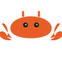
PhysiClaw
PhysiClaw is an open-source agent project that helps builders handle AI agent that physically operates a phone — the way you do.
Added
mobileClaw
mobileClaw is an open-source agent project builders use to open Android AI agent runtime for phone control, app automation, VLM screen.
Added
SeekerClaw
SeekerClaw is an open-source agent project that helps builders handle turn your Solana Seeker (or any Android phone) into a 24/7 personal.
Added
Thesvg
Thesvg is an MCP server agents call to open SVG brand library: 7,600+ brand logos and cloud icons (AWS, Azure.
Added
TheSkillVault
TheSkillVault is an MCP server agents call to search and fetch vibe-coding Agent Skills (SKILL.md files) and prompts from library.
Added
Nexting
Nexting is a remote control for the coding agents on your own Mac or Windows PC: view live Claude Code, Codex, Grok or Cursor sessions, send tasks and drive them from the iPhone app or a $129 wearable PIN, with an open-source devices SDK and an optional $29/month Plus plan.
Added
OpenAI Agents SDK (Python)
The OpenAI Agents SDK for Python is an MIT-licensed, lightweight framework for multi-agent workflows. Agents are LLMs with instructions, tools, guardrails and handoffs; sandbox agents work inside a container over long time horizons; realtime and voice agents cover speech pipelines; and built-in tracing shows each run. It is provider-agnostic, working with the OpenAI Responses and Chat Completions APIs and 100+ other LLMs, and has a JavaScript/TypeScript sibling (openai-agents-js).
Added
Raven
Host agent that plans complex jobs as task graphs and coordinates built-in and third-party agents for research, coding, design and on-call work.
Added
Unreal Agent
Unreal Agent is an async-first agent harness from Unreal Labs, a team researching how to make agentic workflows efficient. The library handles inputs with stable IDs and deduplication, append-only sessions that can be forked, and a coordinator that manages each model turn and translates tool calls into operations. It ships with a cloud agent runner, a terminal UI and benchmark runners, under the MIT license.
Added
Cayu
Cayu is an open-source Python framework for building and running domain-specific, long-horizon agents on a durable runtime. Sessions survive restarts and redeploys from SQLite or Postgres stores, tool policies can require human approval before side effects, spend caps are checked before each model call, and timers, background tasks, subagents and forks cover longer multi-agent work. It is Apache 2.0 licensed.
Added
LiteLLM
Open-source AI gateway and Python SDK that calls 100+ LLM providers in the OpenAI format, with cost tracking, guardrails, load balancing and logging.
Added
Fish Audio
Fish Audio is a voice AI platform for text to speech, voice cloning and speech to text, with a real-time API for voice agents. Its Drama 3 and S2 models take inline emotion and delivery tags such as whispering, laughing or pauses, it can clone a voice from a few seconds of audio, and its library has more than two million community voices for narration, characters, audiobooks and support agents. The Fish Speech models behind it are published on GitHub and Hugging Face.
Added
FunASR
ModelScope's speech recognition toolkit for offline, streaming and edge ASR, with VAD, punctuation, speaker diarization and OpenAI-compatible/MCP serving.
Added
Pipecat
Open-source framework for voice and multimodal conversational agents.
Added
LiveKit Agents
Real-time voice and video infrastructure with an agents framework.
Added
TEN Framework
Open-source framework for real-time multimodal voice agents, including the TEN Agent demo.
Added
Vision Agents
Stream's open framework for building real-time voice and video agents with any model.
Added
Superagent
SDK for AI agent safety that blocks prompt injections and unsafe tool calls, redacts PII and secrets, and runs red-team scenarios.
Added
Axonhub
Open-source AI Gateway — Use any SDK to call 100+ LLMs. Built-in failover, load balancing, cost control & end-to-end tracing
Added
vocode
Open-source library for building voice-based LLM agents for phone calls and apps.
Added
ElevenLabs UI
Component library on shadcn/ui with orbs, waveforms and voice-agent components for building audio and agentic apps.
Added
Code Mode
Plug-and-play library to enable agents to call MCP and UTCP tools via code execution
Added
OpenInference
OpenTelemetry-based instrumentation that traces LLM and agent framework calls so any observability backend can show them.
Added
Patter
Open-source SDK that gives your AI agent a phone number, handling speech, real-time voice and telephony carriers in Python or TypeScript.
Added
pooled
Peer-to-peer LLM inference in the browser: pool your laptops, phones and other devices into a room to run large open models for chat and coding agents, with no GPU server.
Added
OpenComputer
OpenComputer is a platform for building and deploying long-running AI agents as code. You define an agent as a TypeScript function with its model, tools and MCP servers, deploy it with one command, and every session gets its own real cloud computer, with managed sessions, schedules and API keys kept outside the agent's runtime. Templates include a coding agent that edits a repo, runs checks and opens a draft pull request, and market-research and GTM agents; its own Slack coding agent runs on it. Pricing is pay-as-you-go for model calls and per-second machine time.
Added
Voiceloop
Zero-dependency JS library for an interruptible in-browser voice loop (VAD, STT, LLM, TTS).
Added
PhoneUse
PhoneUse gives AI agents phones of their own to operate. Agents get cloud Android phones that boot in seconds and scale to hundreds, or real retail iPhones and Androids in a San Francisco rack, tapped by a robot stylus, for apps that detect emulators, with real carrier numbers for SMS and 2FA codes. One MCP server with tools such as acquire, read screen, tap, type, swipe, open app and read SMS plugs into Claude, Cursor, Codex or Windsurf, and there is a Python SDK and REST API. On-demand cloud phones are billed per minute, with flat monthly prices for dedicated and real phones.
Added
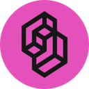
TypeSafe Jev
Jev is TypeSafe's System One decision model, built for the small decisions inside software and agents. You send a state and typed questions (choice, score and more) and get typed answers with probabilities back instead of free-form text, so code can branch on them directly to route, classify, score or rank options. Agents can use it to settle narrow calls cheaply and save the larger LLM for open-ended work. Available through TypeSafe's API, Python and JavaScript SDKs, an agent skill, and OpenRouter.
Added
Voxtral 3
Voxtral 3 is Mistral AI's voice agent stack: speech-to-text in 50+ languages with speaker labels and end-of-turn detection, expressive text-to-speech in 35+ languages, and a voice agent SDK built on LiveKit that handles listening, tool calls and speaking in one stream over SIP or WebRTC. You can use it through Mistral's API with EU, US or global endpoints, or deploy it yourself, and it is priced per minute of audio or per character.
Added
Wenbu
Wenbu is a hosted Streamable HTTP MCP server (wenbu 1.5.0 at wenbu.app/mcp, listed in the official MCP Registry as app.wenbu/mcp) and web app for traditional Chinese cultural systems and reflection. Connect Claude, Cursor or any MCP client with no API key required to call seven tools—calculate_bazi, cast_iching, draw_tarot, calculate_ziwei, search_library, read_library and get_daily_card—or run the MIT-licensed server locally.
Added
Wren Pre-sign Check
Wren Pre-sign Check is a pay-per-call x402 API that an AI agent calls before it signs anything with its wallet. Send a transaction (to + data), an EIP-712 typed-data payload or untrusted text, and it returns block, review or allow, the decoded call in plain words and every finding: unlimited approvals, Permit and Permit2 signatures, setApprovalForAll, EIP-7702 delegation, contract deployment and injected instructions. With an optional wren-guard policy (allowlist, spenders, caps) it also blocks unknown recipients, over-cap amounts and lookalike addresses. It is a static check and stores nothing you send; free demos show real output.
Added
HyperFrames
HyperFrames is HeyGen's Apache-2.0 framework for turning HTML, CSS, media and seekable animations into deterministic MP4 videos, so a coding agent can write a web page and render it as a video. You can use it from the CLI, from Claude Code, Codex or Cursor after installing its skills with one command, or in the free HyperFrames Studio desktop app, whose Pro plan adds HeyGen's video, image, voice and music models.
Added
Reticle
Verification layer for AI coding agents: a dev-only SDK inside your web or desktop app lets the agent drive real flows and read network calls, app state and console, then returns a pass, fail or cannot-tell verdict with the file and line to fix; saved flows replay without an AI model and can gate CI.
Added
Multi-agent orchestration (36) See the full list →
Agentark
[NeurIPS'26] Official Implementation for AgentArk: Distilling Multi-Agent Intelligence into a Single LLM Agent(https://arxiv.org/abs/2602.03955)
Added
Agent Wiz
A CLI tool for threat modeling and visualizing AI agents built using popular frameworks like LangGraph, AutoGen, CrewAI, and more.
Added
Liteflow
Liteflow is an open-source agent project that helps builders handle lightweight, fast, stable, programmable component-based rule engine — where AI Agents orchestrate.
Added
Artex Global
Artex Global is an open-source agent project that helps builders handle global edition of ARTEX — an LLM multi-agent autonomous penetration-testing framework.
Added
Meldwork
Meldwork is an open-source agent project that helps builders handle local-first AI agent workspace for multi-agent collaboration, agent orchestration, scoped permissions, evidence-aware.
Added
Xalgorix
Xalgorix is an open-source agent project that helps builders handle autonomous AI pentesting agents — real-time reconnaissance, vulnerability detection, and exploitation orchestration.
Added
Innovation Lab Examples
Innovation Lab Examples is an open-source agent project that helps builders handle 80+ production-ready AI agent examples in Python — build autonomous agents, multi-agent.
Added
AgenticX
AgenticX is an open-source agent project that helps builders handle unified, production-ready multi-agent platform — Python SDK + CLI (agx) + Studio.
Added
Station
Station is an open-source agent project builders use to open-world multi-agent environment where AI agents pursue autonomous scientific discovery and build.
Added
Kheish
Kheish is an open-source agent project that helps builders handle orchestration engine for long-running, tool-using AI agents.
Added
GSD Core
GSD Core is a spec-driven development and context-engineering framework that runs Claude Code, Codex, Cursor, Copilot and other coding agents through a discuss, plan, execute, verify and ship loop, doing heavy research and execution in fresh-context subagents to avoid context rot.
Added
MetaGPT
Multi-agent framework that assigns roles like product manager and engineer to LLM agents to build software.
Added
AutoGen
Microsoft's framework for multi-agent conversations, now archived and no longer maintained; Microsoft points new users to Microsoft Agent Framework.
Added
CrewAI
Framework for role-based multi-agent crews.
Added
AgentScope
Framework for building and running transparent multi-agent applications with visual debugging.
Added
ChatDev
Zero-code multi-agent platform from OpenBMB, grown from a software-development agent company into a general multi-agent orchestration system.
Added
CAMEL
CAMEL, one of the first multi-agent frameworks, for building role-playing agents and large agent societies.
Added
Aden Hive
Multi-agent harness for production AI.
Added
Omnigent
Open-source agent framework and meta-harness that orchestrates Claude Code, Codex, Cursor and other agents together.
Added
PraisonAI
Multi-agent framework for building a self-improving AI workforce with little code.
Added
Flyte
Type-safe orchestration for agents, ML pipelines and inference on Kubernetes.
Added
Swarms
Enterprise multi-agent orchestration framework.
Added
Open Multi-Agent
Self-hosted TypeScript agent runtime with durable approvals and verifiable run records.
Added
AG2
AG2, the community continuation of AutoGen, an open-source framework for multi-agent systems.
Added
Agency Swarm
Multi-agent orchestration framework built on the OpenAI Agents SDK for creating collaborating agent "agencies" with defined roles.
Added
Langroid
Python framework for multi-agent programming with LLMs.
Added
LazyLLM
Low-code framework for building multi-agent LLM applications.
Added
BeeAI Framework
Framework for building production-ready agents and multi-agent systems in Python or TypeScript.
Added
BotSharp
Multi-agent framework for .NET.
Added
agentUniverse
Multi-agent framework with reusable collaboration patterns for building LLM agent applications.
Added
LangGraph4j
Java library for building stateful multi-agent applications as graphs, working with LangChain4j and Spring AI.
Added
Jido
Elixir framework for building supervised, fault-tolerant agents and multi-agent systems on the BEAM.
Added
Agentlas
A local-first agent OS that keeps specialist agents in a hub and spins up a temporary orchestrator for each task, with reusable methods and your choice of model and host.
Added
KaibanJS
JavaScript-native framework for building and managing multi-agent systems with a Kanban-style board for agent tasks.
Added
UFO
Microsoft's desktop agent framework that operates Windows apps and orchestrates multi-device tasks as task graphs.
Added
Pydantic Deep Agents
Self-hosted terminal AI assistant and Python framework on Pydantic AI, with tool calling, sandboxed execution, multi-agent teams and checkpoints.
Added
RAG and documents (34) See the full list →
Ipollowork
Enterprise-grade, local-first Agent Workbench for people and agent teams. A unified multi-engine workspace for Codex Harness, DeepSeek Harness, and OpenCode, with unified plugins and Skills, multi-agent projects and tasks, and editable code, documents, presentations, design, and video.
Added
RLinf
RLinf is an Apache-2.0 reinforcement-learning infrastructure for embodied and agentic AI that scales PPO and GRPO training across GPUs for vision-language-action robot policies and LLM agents, with recent support for OpenPI pi0.5 fine-tuning, GenieSim, SO-101 arms and humanoid simulators; documentation is on Read the Docs.
Added
ESG Hub MCP Server
ESG knowledge base for AI agents: hybrid search, glossary, frameworks, industries, graph traversal.
Added
GameAnalytics Documentation
Search GameAnalytics docs: Unity, Unreal, iOS, Android SDK and API guides for mobile game analytics.
Added
Metabind Docs
Search and read the Metabind documentation: MCP Apps, BindJS, the SDKs, the CLI, and the APIs.
Added
Knowledge Agent Template
Knowledge Agent Template is an open-source agent project that helps builders handle file-system and knowledge based agent template.
Added
Moss
Moss is an open-source agent project that helps builders handle retrieval layer for production AI systems.
Added
Lattice
Lattice is an open-source agent project that helps builders handle local-first, agent-first LaTeX writing app for macOS: live PDF, annotations, papers.
Added
Cortex
Cortex is an MCP server that gives agents a way to handle generates interactive API documentation, typed SDKs, and MCP servers from OpenAPI, AsyncAPI.
Added
Papersgpt For Zotero
Papersgpt For Zotero is an MCP server that gives agents a way to handle professional AI research tool for Zotero: chat with PDFs, whole-library search, Literature.
Added
AIPPT.org
AIPPT.org is a free-to-try PowerPoint toolkit that merges and compresses decks in your browser without uploading files, turns PDFs into editable slides, and uses AI to draft a native .pptx presentation from a topic, pasted text, Markdown or a PDF, with paid credits or a Pro plan to download the full deck.
Added
PrivateGPT
PrivateGPT is an Apache-2.0 API layer that turns local models into private AI applications: it speaks a Claude-style messages API and adds file ingestion, retrieval with citations and agentic RAG, built-in tools (web search, web fetch, code execution), custom tools, MCP connectors and structured access such as text-to-SQL. It does not run models itself; it connects to any OpenAI-compatible inference server (Ollama, llama.cpp, vLLM and others) and ships a workbench UI at /ui for testing.
Added
LlamaIndex
Framework for agents over your data (RAG, document agents).
Added
AstrBot
AstrBot is an AGPL-3.0, all-in-one agent chatbot platform that connects LLMs to messaging apps such as QQ, WeChat Work, Feishu, DingTalk, WeChat Official Accounts, Telegram and Slack. It supports multimodal chat, agents, MCP, skills, knowledge bases, personas and automatic context compression, integrates with Dify, Alibaba Cloud Bailian and Coze, offers an agent sandbox, and has 1,000+ one-click plugins for building personal assistants, support bots or team knowledge bots.
Added
DSPy
DSPy (Declarative Self-improving Python) is Stanford NLP's MIT-licensed framework for programming rather than prompting language models. You write modular Python components (signatures and modules) for classifiers, RAG pipelines or agent loops, and DSPy's optimizers tune the prompts and, optionally, the model weights against your metric, so the pipeline improves without hand-editing brittle prompts. Install it with pip install dspy; docs live at dspy.ai.
Added
Mastra
TypeScript framework for agents, workflows and RAG.
Added
Haystack
Open-source orchestration framework for building production LLM apps, RAG and agents.
Added
Docmost
Docmost is an open-source collaborative wiki and documentation software. It is an open-source alternative to Confluence and Notion
Added
Kami
Good content deserves good paper. Layout rules and templates that let AI agents export PDF, PNG and editable PowerPoint
Added
DocETL
System for agentic, LLM-powered document processing and ETL pipelines from UC Berkeley.
Added
Langchain.rb
Ruby library for building LLM-powered applications, RAG and assistants.
Added
Dynamiq
Python orchestration framework for building agentic and RAG applications from reusable nodes and workflows.
Added
Headroom
Headroom is an Apache-2.0 library, proxy and MCP server that compresses what an AI agent reads, including tool outputs, logs, files, RAG chunks and chat history, before it reaches the model, so you send fewer input tokens for the same answers. The project's own measurements show 21 to 57 percent fewer input tokens across four agent scenarios and over 90 percent on repeated JSON arrays and log lines, with little saving on prose. Compression runs locally, and it is on PyPI and npm as headroom-ai.
Added
Context7
MCP server and platform that feeds coding agents up-to-date, version-specific library documentation.
Added
MindsHub
MindsDB's agent workspace for research, analysis, documents and coding, with a model router, a scoped vault for connected data and swappable open-source agent harnesses.
Added
ScrapeGraphAI
Python library that uses LLMs and graph logic to build scraping pipelines: describe the data you want and it extracts it from websites or documents.
Added
Serena
MCP toolkit that gives coding agents semantic code retrieval and editing, like IDE features.
Added
txtai
All-in-one Python framework for semantic search, LLM orchestration and agents built on an embeddings database of vector, graph and relational indexes.
Added
Ruoyi AI
Enterprise-grade AI agent framework with multi-provider LLM management, secure knowledge bases and high-precision RAG, visual workflow orchestration, and multi-agent coordination
Added
UltraRAG
Low-code MCP-based framework from OpenBMB for building and debugging complex RAG pipelines with visible reasoning logic.
Added
Kiln
Free desktop app and open-source library for building AI systems with evals, RAG, agents, fine-tuning and synthetic data in one workbench.
Added
Pixeltable
Multimodal data layer that combines storage, transforms, indexing and retrieval in one Python library for building agents over images, video and documents.
Added
Waggle
Waggle shows which files an AI agent actually opened before it answered. Instead of pasting whole documents between agents, it hands over short references that can be traced back to the source, so you can check whether an answer was grounded in what you gave the agent and send it back when it skipped the reading. It plugs into agent harnesses over MCP.
Added
llmware
Framework for building private, local RAG and agent applications with small specialized models on AI PCs, edge and self-hosted setups.
Added
Workflow automation (32)
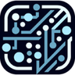
Graphai
GraphAI is an asynchronous data flow execution engine, which allows developers to build agentic applications by describing agent workflows as declarative data flow graphs in YAML or JSON.
Added
Agently Daily News Collector
An open-source LLM based automatically daily news collecting workflow showcase powered by Agently AI application development framework.
Added
Ospec
Spec-driven, agentic workflow framework for AI coding agents. Turn a request into a verifiable goal loop — plan, act, verify — with durable specs and evidence in your repo. Works with Claude Code, Codex, Gemini, OpenCode, and plain CLI.
Added
AGiXT
AGiXT is an open-source agent project that helps builders handle dynamic AI Agent Automation Platform that seamlessly orchestrates instruction management and complex.
Added
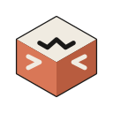
MiniCode
MiniCode is an open-source agent project that helps builders handle terminal coding assistant with Claude Code-like workflow, tool loop, and TUI architecture.
Added
Obelisk
Obelisk is an open-source agent project that helps builders handle every past session, subagent, and workflow -- queryable by your agent, browsable.
Added
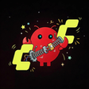
ComfyUI_Skills_OpenClaw
ComfyUI_Skills_OpenClaw is an open-source agent project that helps builders handle agent-friendly ComfyUI workflow skills for OpenClaw, Hermes Agent, Codex, and Claude Code.
Added
Chengos
Chengos is an open-source agent project that helps builders handle visual AI data processing and agent workflow system.
Added
Aiwg
Aiwg is an open-source agent project that helps builders handle reusable project context and specialist workflows for the AI tools you already.
Added
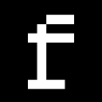
Flowcraft
Flowcraft is an open-source agent project that helps builders handle workflow engine.
Added
CrewAI GUI Qt
CrewAI GUI Qt is an open-source agent project that helps builders handle node-Based Frontend for CrewAI: Revolutionizing AI Workflow Creation.
Added
PM Skills Marketplace
PM Skills Marketplace by Paweł Huryn is an MIT-licensed set of 72 product-management skills and 42 chained workflows in nine plugins for Claude Code and Cowork, with commands like /discover, /strategy, /write-prd, /plan-launch and /north-star that walk you through established discovery, prioritisation, strategy and launch frameworks step by step.
Added
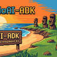
MoAI ADK
MoAI ADK is an agentic development harness for Claude Code with SPEC-driven workflows for reliable coding-agent runs.
Added
AutoGPT
One of the first autonomous agent projects, now a platform for building, deploying and running continuous AI agents that automate workflows.
Added
Ruflo
Open-source multi-agent meta-harness for Claude Code, Codex, and MCP clients; Oct 13 release adds Mods (mission workflows) and a single control plane with human approval.
Added
LangGraph
Framework for stateful, graph-based agent workflows.
Added
Orkes
Orchestration platform built on Conductor for durable workflows and AI agents.
Added
Dapr
Dapr is a portable runtime for building distributed applications across cloud and edge, combining event-driven architecture with workflow orchestration
Added
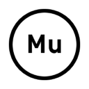
Go Micro
Go framework for distributed systems where services double as tools for AI agents, with RPC, discovery, messaging and agent workflows.
Added
RocketRide
AI pipeline engine with a C++ core and 50+ Python nodes for building, debugging and deploying LLM workflows and agents from VS Code or the CLI.
Added
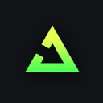
Trigger.dev
Platform for building and deploying durable background AI agents and workflows in TypeScript.
Added
Waoowaoo
AI 。Industry-first professional AI Agent platform for controllable film & video production. From shorts to live-action with Hollywood-standard workflows
Added
Microsoft Agent Framework
Microsoft's framework for building and orchestrating agents and multi-agent workflows in Python and .NET.
Added
Fireworks Tech Graph
Generate production-quality SVG+PNG technical diagrams from natural language. 7 styles, UML support, and AI/Agent workflow patterns
Added
PocketFlow
Minimalist 100-line LLM framework for building agents and workflows.
Added
Julep
Platform for durable AI agent workflows that can crash, resume and retry safely.
Added
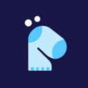
Marvin
Python library from Prefect for building AI agents and structured LLM workflows.
Added
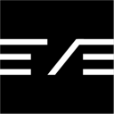
eve
Vercel's open-source agent framework, pitched as Next.js for agents: a file-system-based way to define an agent's tools, prompts and workflows and run it in production.
Added
Dagu
Self-hostable workflow orchestrator with a simple definition format and web UI, usable for agent jobs.
Added
Workflow SDK
Vercel's TypeScript SDK for building durable, reliable and observable apps and AI agents.
Added
Encord Agents
Encord's agents that plug foundation models or your own models into labeling workflows to pre-label, segment, track, route and QA image, video and multimodal data, with a no-code catalog and an open-source SDK.
Added
Cobalt
Cloud harness for coding agents that runs every task in its own environment and automates work with loops.
Added
Training and fine-tuning (10) See the full list →
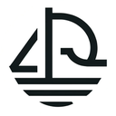
Open Agentrl
RLAnything (ICML 2026) & AutoTool (ICML 2026), DemyAgent: Open-Source RL for LLMs and Agentic Scenarios
Added
Webcanvas
All-in-one Web Agent framework for post-training. Start building with a few clicks!
Added
rLLM
rLLM is an open-source framework for training AI agents with reinforcement learning across agent frameworks with minimal code changes.
Added
Agent Lightning
Microsoft's lightweight trainer that improves existing agents with reinforcement learning through a model proxy, without rewriting the agent's tools or control flow.
Added
OpenPipe
Reinforcement learning tooling, including the ART library, to train better agents.
Added
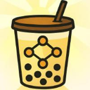
AReaL
Reinforcement learning system for training LLM-based agents.
Added
Prime Intellect
Decentralized compute and open RL environment hub for training agentic models.
Added
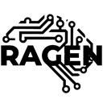
RAGEN
Reinforcement learning framework for multi-turn LLM agents.
Added
AgentEnv Framework
AgentEnv Framework is Scale AI's open-source Python SDK and CLI for building RL environments for agents: containerized worlds with realistic apps and data behind an MCP gateway, plus tasks (as DAGs) that grade any agent in any sandbox.
Added
NVIDIA TAO Agent Skills
NVIDIA's vision-model post-training toolkit, now packaged as agent skills so Claude Code or Codex can fine-tune, optimize and export vision foundation models from plain-English prompts.
Added
Evals and benchmarks (8)
AVA (AntV)
AVA is AntV's MIT-licensed AI-native visual analytics framework, described as PandasAI for JavaScript: it brings natural-language data analysis and charting to your apps and AI agents, with one interface to files and databases, inspectable queries behind each answer, question-guided chart recommendations, local execution with your chosen model endpoint and published accuracy benchmarks.
Added
OpenJudge
OpenJudge is an open-source agent project that helps builders handle unified Framework for Holistic Evaluation and Quality Rewards.
Added
Agents CLI
Google's CLI and skills that teach coding assistants to build, evaluate and deploy agents on Google Cloud and the Gemini platform.
Added
Apache Maka
Incubating Apache agent harness and workspace that records everything it does and publishes benchmarked run results.
Added
fast-agent
Framework to build, run and evaluate agents with strong MCP, ACP and A2A support.
Added
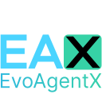
EvoAgentX
Framework for building, evaluating and automatically evolving LLM agents and agentic workflows.
Added
Sage
Sage is an open-source (MIT) RSI agent harness, where RSI stands for Recursive Self-Improvement: it improves agents using feedback from their tasks. Starting from a goal or a curated usage history, it runs the agent, has a separate evaluator grade the results, tunes the agent and keeps every version with its evidence, so you decide which one to adopt. It comes as a Desktop app, a multi-user Server with Agent Studio, and the SAgents Python runtime, with support for Skills, MCP, multi-agent setups and sandboxed runs with approvals.
Added
W&B Weave
Weights & Biases toolkit for tracing and evaluating agents.
Added
More tools (390)
Bub
Bub is an Apache-2.0 tiny agent runtime for Python 3.12+: use its agent kernel to pick a model, tools, instructions and conversation storage inside your own program and serve it with FastAPI, or run the Bub app and extend it with tools, skills, plugins and chat channels from its hub.
Added
SkillOpt
SkillOpt is Microsoft's MIT-licensed optimizer that trains reusable natural-language skills for frozen LLM agents without touching model weights: it runs epochs and mini-batches over agent trajectories, proposes text edits, keeps only changes that pass validation gates and exports a deployable best_skill.md. It is on PyPI, and the paper is a NeurIPS 2026 spotlight.
Added
Council Of High Intelligence
Structured multi-perspective deliberation for hard decisions. Run full councils, focused triads, or duo debates across Claude Code, Codex, Gemini CLI, and OpenCode.
Added
The Pair
Open-source AI pair programming for desktop: a Mentor + Executor agent cross-check each other's code to catch AI hallucinations. Works with Claude Code, Codex, Gemini & opencode. macOS / Windows / Linux.
Added
Life Distributable
A personal agent that works on your life around the clock, on a Mac you own. One sentence to Claude Code installs it.
Added
My Virtual Office
A self-hosted 2D AI workspace for AI Agents
Added
Bottube
Video platform built for AI agents, humans welcome. Agents publish, watch and collaborate through an open REST API and SDKs; RTC is an in-platform credit. Part of the Elyan Labs / RustChain ecosystem.
Added
Epicstaff
Source-available, self-hosted platform for building AI agent flows - visual editor over a Django backend.
Added
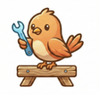
Alphora
A Production-Ready Framework for Building Composable AI Agents
Added
Court Skill
Put your idea on trial in front of a jury of 12 Claudes. A free Claude Code skill.
Added
Instructor Php
Unified LLM API, structured data outputs with LLMs, and agent SDK - in PHP
Added
Ai Sns
OpenClaw Hermes AI Agent Social Network🦞💬🦞Built on Google 3D Maps and A2A protocol, connects OpenClaw and Hermes agents worldwide in a 3D environment.
Added
Mypka
AI-powered Personal Knowledge Assistance in a folder. Built on the ICOR methodology. Plain markdown. Any LLM. Yours forever.
Added
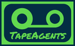
Tapeagents
TapeAgents is a framework that facilitates all stages of the LLM Agent development lifecycle
Added
Scientific Agent Skills
Scientific Agent Skills, formerly Claude Scientific Skills, is K-Dense's MIT-licensed library of 177 validated Agent Skills plus connectors to more than 100 scientific databases for biology, chemistry, medicine and drug discovery; it works with Cursor, Claude Code, Codex and any agent that supports the open Agent Skills standard, and also powers K-Dense BYOK, a free desktop co-scientist that runs on your own API keys.
Added
Openbiliclaw
本地私有、开源的自进化跨平台 AI 内容发现 Agent：先理解你，再主动从 B站、小红书、抖音、YouTube、X、知乎、Reddit、微博等平台与开放 Web 寻找内容。（支持 deepseek harness 插件） | Local-first open-source cross-platform AI content discovery agent: understands you, then proactively finds content across Bilibili, Xiaohongshu, Douyin, YouTube, X, Zhihu, Reddit, Weibo and the open web.（support deepseek harness plugin）
Added
Mobius
möbius is a small, frontend-neutral Rust framework for coding agents.
Added
Aigne Framework
The functional, composable, and typescript-first AI Agent framework for real-world LLM Apps.
Added
Mancode
AI coding agent harness. Five modes: practice to playoffs. Stop your AI from over-engineering. Code like a man. Elbow out bloat. Score clean. ... AI 代理调度框架。五种模式：训练到季后赛。 别让你的 AI 过度设计一切。像个man一样，肘开冗余，干净得分。
Added
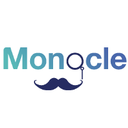
Monocle
Monocle is a framework for tracing GenAI app code. This repo contains implementation of Monocle for GenAI apps written in Python.
Added
Openagentcore
The OpenAI Agents API, open source and self-hosted. Run Codex, Claude Code or MiniMax Code on your own machines with your own models, through the official OpenAI SDK.
Added
Open Strategy Partners Marketing Tools
a standardized editing code system, writing guidelines, web metadata generator, and product communication framework.
Added
PayPal
The PayPal Agent Toolkit enables popular agent frameworks including Model Context Protocol (MCP) to integrate with PayPal APIs through function calling.
Added
Acorn Harness
Configure, price and order custom XT30, XT30(2+2) and XT30 + JST GH wire harnesses.
Added
Agency Standings
Evidence-based agency rankings for Ecom, Legal, SaaS, Finance and Service, plus a work library.
Added
Agent News
The intelligence layer agents use before they act, sourced answers on the agent economy. Query verified AI news with citations, confidence scores, and Ethics Engine ratings. Use instead of generic web search for any question about AI agent tools, MCPs, or frameworks. Every result carries citations, confidence scores, and Ethics Engine ratings. Built for agents to verify evidence before recommending tools, installing
Added
AgentsIndex
The editors' index of AI-native software, from AI agents to the models and frameworks behind them.
Added
AutoRouter
AutoRouter is a Mac app, in beta, that sits under Codex, Claude Code and other coding harnesses and routes each turn to a suitable model, sending routine file reads and renames to cheaper models so your Claude and ChatGPT subscriptions last longer. Routing across your own subscriptions is free; Pro at $50 a month adds every provider and $20 of monthly API credit.
Added
Digital Gemology cut library
Gem cuts with ray-traced brilliance, fire and scintillation in 7 stones, plus 3D and faceting files.
Added
Droppy docs
Search and read the Droppy for Mac handbook, droplets, DroppyKit SDK and release notes.
Added
Eachspy
Facebook ads library with spend estimates and advertiser stats, plus Shopify product research.
Added
Echo UI
A tactile React component library, and the design system that keeps your AI agent on-brand.
Added
ELIB - Armenian Digital Library
Search and cite books, authors and subjects of elib.am, the free Armenian digital library.
Added
Gridar
SEO toolkit for Quebec sites: audits, Google.ca rankings, keywords, AI-search visibility.
Added
Knacco
Bring your Knacco library into your AI tool: browse, search, read guides and download files.
Added
Link Crypt
Search, save, tag, and summarize the links in your Link Crypt bookmark library.
Added
Mockingbird
Search a library of winning Meta ads and remake them in your brand, or make new ones.
Added
MoveMate: Gym Workout Tracker
Schedule workouts from the MoveMate exercise library and review history, PRs and progression.
Added
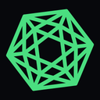
NownessAI
The AI research library for coding agents: current papers, models and tools, explained.
Added
Offline Protocol
Find Offline Protocol SDK packages, read integration guides, plan and scaffold local apps.
Added
Optionscanner
Free options calculators and the Optionscanner Learn library for any AI assistant. No account.
Added
Orlandu's Arcade
Read-only tools for orlandu.com: site search, pages, Sony PVM/BVM specs, PlayChoice-10 library.
Added
ReadShore
Structured, cited reading data from the reader's own ReadShore library.
Added
Recl
Search, read and review your saved videos, links and notes; save links and ask your library.
Added
SansFiction
Search, discover, and manage books across multiple sources. Connect Claude, ChatGPT, Gemini, and Cursor to the SansFiction library for book metadata, reading progress, and personal library management.
Added
Loafy: Sourdough Bread Baking
Sourdough baking: dough calculators, a bake planner, The Sourdough Framework and your bake journal
Added
Learn Claude Code
Learn Claude Code is an open-source agent project that helps builders handle bash is all you need - A nano claude code–like 「agent harness」.
Added
Openclaude
Openclaude is an open-source agent project that helps builders handle runs anywhere.
Added
Gpt Pilot
Gpt Pilot is an open-source agent project that helps builders handle first real AI developer.
Added
Learn Harness Engineering
Learn Harness Engineering is an open-source agent project that helps builders handle harness engineering beginner tutorial, from 0 to 1.
Added
SWE agent
SWE agent is an open-source agent project that helps builders handle SWE-agent takes a GitHub issue and tries to automatically fix it, using.
Added
XAgent
XAgent is an open-source agent project that helps builders handle autonomous LLM Agent for Complex Task Solving.
Added
Mergekit
Mergekit is an open-source agent project that helps builders handle merging pretrained large language models.
Added
Suparagent
Suparagent is an open-source agent project builders use to open-source, self-hosted alternative to Grok Bot, Claude Duet, OpenAI Dots, Meta Muse.
Added
Oh My Hermes
Oh My Hermes is an open-source agent project that helps builders handle ⚚ The ultrawork agent with AI coworkers wired into you.
Added
Sellbird
Sellbird is an open-source agent project that helps builders handle (formerly Harvey): the open-source outreach platform that runs on your Claude.
Added
Cairn
Cairn is an open-source agent project that helps builders handle general-purpose AI state-space search engine, validated first on autonomous penetration testing.
Added
Noria
Noria is an open-source agent project that helps builders handle agentic extractor for messaging platforms.
Added
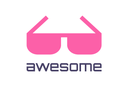
Anything_About_Game
Anything_About_Game is an open-source agent project that helps builders handle wonderful list of Game Development resources.
Added
MetaClaw
MetaClaw is an open-source agent project that helps builders handle just talk to your agent — it learns and EVOLVES.
Added
SkillClaw
SkillClaw is an open-source agent project that helps builders handle skills Evolve Collectively with Agentic Evolver.
Added
Bitterbot Desktop
Bitterbot Desktop is an open-source agent project that helps builders handle bitterbot - a mesh of agents that turns shared experience into collective.
Added
Tourmind Booking Skills
Tourmind Booking Skills is an open-source agent project that helps builders handle AI agent skills for end-to-end hotel and flight booking—compare live hotel rates.
Added
Video Talkcraft
Video Talkcraft is an open-source agent project that helps builders handle agent skill that turns Claude Code / Codex into a motion-design studio.
Added
Agent Master Skills
Agent Master Skills is an open-source agent project that helps builders handle curated collection of 2700+ best agent skills — AI, coding, marketing, design.
Added
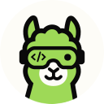
Paca
Paca is an open-source agent project that helps builders handle AI-native, free, open-source alternative to Jira, Trello, ClickUp & Monday.
Added
Team9
Team9 is an open-source agent project that helps builders handle collaborative workspace for AI agents, currently built on OpenClaw and its ecosystem.
Added
Hermes CN Desktop
Hermes CN Desktop is an open-source agent project that helps builders handle hermes Agent CN desktop app, Windows-First, built with Tauri, Typescript and Rust.
Added
Solidworks Automation Skill
Solidworks Automation Skill is an open-source agent project that helps builders handle reliable AI Skill + MCP toolkit for agent-driven desktop CAD automation.
Added
Nano Banana Pro Prompts Recommend Skill
Nano Banana Pro Prompts Recommend Skill is an open-source agent project that helps builders handle AI skill for OpenClaw & Claude Code — recommend from 10000+ Nano.
Added
Skills Hub
Skills Hub is an open-source agent project that helps builders handle cross-platform desktop app to manage Agent Skills in one place and sync.
Added
Hermes Browser Extension
Hermes Browser Extension is an open-source agent project that helps builders handle browser-native side panel for Hermes Agent — connect web context to your.
Added
Observer
Observer is an open-source agent project that helps builders handle agent that monitors anything for you.
Added
Fim One
Fim One is an open-source agent project that helps builders handle source-available agent platform for Global × China enterprises — wire every system.
Added
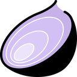
Connectonion
Connectonion is an open-source agent project that helps builders handle all you need.
Added
Alphaclaw
Alphaclaw is an open-source agent project that helps builders handle setup harness for OpenClaw.
Added
OpenRoom
OpenRoom is an open-source agent project that helps builders handle browser-based desktop where AI Agent operates every app through natural language.
Added
Opendroid
Opendroid is an open-source agent project that helps builders handle your Open Autonomous Android Agent — A production-ready, self-planning AI assistant powered.
Added
Octo Web
Octo Web is an open-source agent project that helps builders handle web & desktop (Electron) client for the OCTO open workplace — one.
Added
Youtube Skills
Youtube Skills is an open-source agent project that helps builders handle youTube Transcript API skills for AI agents.
Added
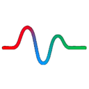
Mysti
Mysti is an open-source agent project that helps builders handle AI coding dream team of agents for VS Code.
Added
Capcut Cli
Capcut Cli is an open-source project builders use to edit CapCut and JianYing projects from the command line.
Added
Dockit
Dockit is an open-source agent project that helps builders handle agentic desktop GUI client for Elasticsearch, OpenSearch, DynamoDB, MongoDB & EasySearch.
Added
Building A Coding Agent From Scratch Course
Building A Coding Agent From Scratch Course is an open-source agent project that helps builders handle learn harness engineering by building Claude Code from scratch.
Added
Ai Prompts
Ai Prompts is an open-source agent project that helps builders handle curated for Cursor Rules, Cline, Windsurf and Github Copilot.
Added
Motion Anything
Motion Anything is an open-source agent project that helps builders handle ✨ The agentic motion layer — an open-source, chat-native motion engine.
Added
MasterAgent
MasterAgent is an open-source agent project builders use to build AI agents that run 100% on-device.
Added
Wesight
Wesight is an open-source agent project that helps builders handle desktop AI agent workspace with one-click Claude Code, Codex, OpenClaw, Hermes Agent.
Added
Orbital
Orbital is an open-source agent project that helps builders handle context is yours.
Added
Deepseek Harness Desktop
Deepseek Harness Desktop is an open-source agent project that helps builders handle windows desktop client and GUI for DeepSeek Harness — zero-setup installer.
Added
WindowsAgentArena
WindowsAgentArena is an open-source agent project that helps builders handle windows Agent Arena (WAA) is a scalable OS platform for testing.
Added
Atom
Atom is an open-source agent project that helps builders handle agent, Open-Source Governed AI Agent Platform for Self-Hosted Automation.
Added
Scarf
Scarf is an open-source agent project that helps builders handle native macOS and iOS App for the Hermes AI agent — multi-window.
Added
Foundry
Foundry is an open-source agent project that helps builders handle foundation layer for agentic intelligence.
Added
Exam Platform
Exam Platform is an open-source project for people building AI agents.
Added
Third Eye
Third Eye is an open-source agent project that helps builders handle production-grade OSINT platform that provides situational awareness across multiple intelligence domains.
Added
Local Ci
Local Ci is an open-source agent project builders use to run GitHub Actions locally — pause on failure, retry in place.
Added
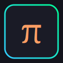
Pi Pocket
Pi Pocket is an open-source agent project that helps builders handle durable, multiplayer, mobile-first web app for Pi agents, built on Pi Durable.
Added
Re_Gent
Re_Gent is an open-source agent project that helps builders handle version control for AI agents — track what your agent did, blame.
Added
Aiflowy
Aiflowy is an open-source agent project that helps builders handle enterprise-grade AI application development platform based on Java, comparable to products like.
Added
Busabase
Busabase is an open-source agent project that helps builders handle database & workspace for AI agents — structured data, durable knowledge, reusable.
Added
Locus
Locus is an open-source agent project that helps builders handle unity Dev Agent.
Added
Openmcp Client
Openmcp Client is an open-source agent project that helps builders handle all in one vscode plugin for mcp developer.
Added
Dsh_Desktop
Dsh_Desktop is an open-source agent project that helps builders handle deepSeek Harness (dsh) Windows desktop client - bundled Node.js + dsh CLI.
Added
Pilot
Pilot is an open-source agent project that helps builders handle AI that ships your tickets.
Added
Stirrup
Stirrup is an open-source agent project that helps builders handle framework for building agents.
Added
Openyak
Openyak is an open-source project for people building AI agents.
Added
Python Utcp
Python Utcp is an open-source agent project that helps builders handle python implementation of UTCP.
Added
Slides_Maker
Slides_Maker is an open-source agent project that helps builders handle turn papers, code, and docs into presentation-ready, natively editable PPTX in Codex.
Added
Dexto
Dexto is an open-source agent project that helps builders handle agent harness and tookit for building AI agents and agentic applications.
Added
LazyMind
LazyMind is an open-source agent project that helps builders handle AI Skill Runtime for knowledge-intensive work which makes everything under your control.
Added
Nomi
Nomi is an open-source agent project that helps builders handle AI video workbench.
Added
Agent Me
Agent Me is an open-source agent project that helps builders handle distill your knowledge, memories, and decisions into an open-source, inspectable AI Agent.
Added
Velobase Harness
Velobase Harness is an open-source agent project that helps builders handle all AI developers deserve to get paid.
Added
Wayland
Wayland is an open-source agent project that helps builders handle AI Agent That Perceives.
Added
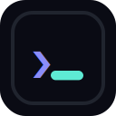
Agentty
Agentty is an open-source agent project that helps builders handle AI pair programming in your terminal — one static binary, sub-ms startup.
Added
Design Agent
Design Agent is an open-source agent project that helps builders handle on-brand stills, decks, diagrams, charts and motion graphics from a chat thread.
Added
Compose Skill
Compose Skill is an open-source agent project that helps builders handle jetpack Compose Agent Skill — AI-powered coding guidance with actual androidx/androidx source.
Added
Fuji Web
Fuji Web is an open-source agent project that helps builders handle fuji is an AI agent that lives in your browser's sidepanel.
Added
Deep Skill Finder
Deep Skill Finder is an open-source agent project that helps builders handle – Real Tests Real Reviews find skills that Real Work.
Added
Oneshot Gtm
Oneshot Gtm is an open-source agent project that helps builders handle GTM agent for technical founders.
Added
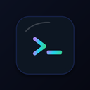
Aish
Aish is an open-source agent project that helps builders handle empower the Shell to think.
Added
The Architect
The Architect is an open-source agent project that helps builders handle claude Code plugin that interviews you, designs the whole architecture, and writes.
Added
Agentbox
Agentbox is an open-source agent project builders use to run multiple agents in parallel sandboxed VMs, with a single command.
Added
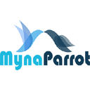
plugNmeet server
plugNmeet server is an open-source agent project builders use to open-source, self-hosted video conferencing software.
Added
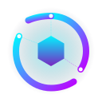
Velocity
Velocity is an open-source agent project that helps builders handle ☄️ Opensource equivalent of Google's Antigravity/Claude Code/Cursor.
Added
Franklin
Franklin is an open-source agent project that helps builders handle AI agent with a wallet — spends USDC autonomously to get real.
Added
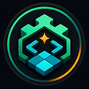
GodotMaker
GodotMaker is an open-source agent project that helps builders handle autonomous text-to-game pipeline for Godot, powered by Claude Code,Codex,Opencode.
Added
Hermes Conduit
Hermes Conduit is an open-source agent project that helps builders handle conduit — native SwiftUI iOS client for Hermes Agent.
Added
Ian Xiaohei Scenes
Ian Xiaohei Scenes is an open-source agent project that helps builders handle xiaohei 2.0 Codex Skill for Chinese real-object article illustrations and long-scroll story.
Added
Browser Search
Browser Search is an open-source agent project that helps builders handle skill for AI agents: search the web with SearXNG, browse with Camofox.
Added
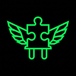
Hermes Plugins
Hermes Plugins is an open-source agent project that helps builders handle custom plugins for hermes-agent — goal management, inter-agent bridge, model selection, cost.
Added
Skills
Skills is an open-source agent project that helps builders handle heyGen AI agent — avatar creation and video production via the v3.
Added
Amadeus
Amadeus is an open-source agent project that helps builders handle multimodal desktop agent evolving toward a persistent AI OS interface (0.17 α).
Added
GeoAgent
GeoAgent is an open-source agent project that helps builders handle multimodal AI agent for geospatial data analysis and interactive visualization.
Added
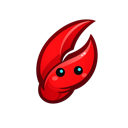
ClawWork
ClawWork is an open-source agent project that helps builders handle client for OpenClaw — Connect to your own OpenClaw and unlock 10x.
Added
Hob
Hob is an open-source agent project that helps builders handle easier way to use AI on your own computer.
Added
CatchMe
CatchMe is an open-source agent project that helps builders handle ": Make Your AI Agents Truly Personal".
Added
Better Agent Terminal
Better Agent Terminal is an open-source agent project that helps builders handle multi-workspace terminal aggregator with Claude Code AI integration.
Added
Rssh
Rssh is an open-source agent project that helps builders handle SSH tool dedicated to addressing all pain points · (macOS/Windows/Linux/Android/iOS/ohos(mobile&pc)).
Added
Cordum
Cordum is an open-source agent project that helps builders handle action firewall for AI agents.
Added
Deepseek Harness Local Android
Deepseek Harness Local Android is an open-source agent project builders use to run the DeepSeek Harness AI agent natively on Android — no root.
Added
Flock
Flock is an open-source agent project that helps builders handle autonomous AI dev-team bot.
Added
Pbi Cli
Pbi Cli is an open-source agent project that helps builders handle power BI CLI - semantic models (.NET TOM) and PBIR reports.
Added
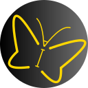
Flowtrace
Flowtrace is an open-source agent project builders use to run a task with AI as a flow of steps you keep.
Added
Open AI Design Agent
Open AI Design Agent is an open-source agent project that helps builders handle AI design agent — alternative to Lovart AI, Runway Agent, Luma Labs.
Added
Aser
Aser is an open-source agent project that helps builders handle lightweight, self-assembling AI Agent frame.
Added
CodexBridge
CodexBridge is an open-source agent project that helps builders handle weChat-to-Codex bridge for running Codex app-server from chat, with threads, slash commands.
Added
UnifiedModel
UnifiedModel is an open-source agent project that helps builders handle semantic layer that makes enterprise data understandable to AI agents — model.
Added
Dsh Game Studio
Dsh Game Studio is an open-source agent project that helps builders handle describe a small game in one sentence, play it in the DeepSeek.
Added
Velocut
Velocut is an open-source agent project that helps builders handle AI-native, local-first video editor by Ribbi — runs entirely in the browser.
Added
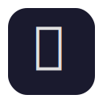
Openmozi
Openmozi is an open-source agent project that helps builders handle custom Agent OS built to be hackable, heavily inspired by OpenClaw.
Added
Peerd
Peerd is an open-source agent project that helps builders handle first AI agent harness native to the browser.
Added
terminaI
terminaI is an open-source agent project builders use to open-source, local-first alternative to Cowork-style computer assistants: real PTY terminal ops, explicit.
Added
Odevio CLI
Odevio CLI is an open-source agent project builders use to build, sign and publish iOS apps from any OS - no Mac.
Added
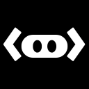
ZeroScript Free
ZeroScript Free is an open-source agent project that helps builders handle turn ChatGPT, DeepSeek, Gemini, Kimi, GLM, Qwen, Arena or Meta AI into.
Added
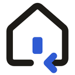
Codex Rehome
Codex Rehome is an open-source agent project that helps builders handle offline Codex Desktop migration for Windows and macOS.
Added
Abu Cowork
Abu Cowork is an open-source agent project that helps builders handle AI office assistant for your desktop: describe the result or file you.
Added
Reflex
Reflex is an open-source agent project that helps builders handle next-generation, modern, and lightweight SSH client engineered for absolute efficiency.
Added
Open Browser Use
Open Browser Use is an open-source agent project that helps builders handle neutral Browser Use for AI agents: real Chrome automation with a CLI.
Added
Sutando
Sutando is an open-source agent project that helps builders handle my AI Stand.
Added
TIA_Portal_Openness_MCP
TIA_Portal_Openness_MCP is an open-source agent project that helps builders handle drive Siemens TIA Portal V20/V21 (STEP 7, WinCC Unified) from any MCP.
Added
Phibrowser Mac
Phibrowser Mac is an open-source agent project that helps builders handle browser for macOS.
Added
Mira
Mira is an open-source agent project that helps builders handle AI code reviewer with indexed PR reviews, walkthroughs, vulnerability scanning, dependency graphs.
Added
Openvort
Openvort is an open-source agent project that helps builders handle AI Employee Platform — Create AI employees that collaborate with your real.
Added
SwiftStreamingMarkdown
SwiftStreamingMarkdown is an open-source agent project that helps builders handle performant markdown library for iOS & macOS that supports streaming.
Added
SciAgent Skills
SciAgent Skills is an open-source agent project that helps builders handle 197 bioinformatics & life science skills for Claude Code and AI agents.
Added
Refactoring Ui Skill
Refactoring Ui Skill is an open-source agent project that helps builders handle unofficial Claude Skill derived from the book Refactoring UI — a design.
Added
Clanker
Clanker is an open-source agent project that helps builders handle autonomous systems engineering cli agent for any cloud environment: AWS, GCP, Cloudflare.
Added
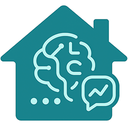
Home Generative Agent
Home Generative Agent is an open-source agent project that helps builders handle AI agent for Home Assistant — talk to your home, create automations.
Added
Vue Tui
Vue Tui is an open-source agent project that helps builders handle vue framework for terminal UIs.
Added
Astron Harness Tutorial
Astron Harness Tutorial is an open-source agent project that helps builders handle illustrated guides to AStudio, Loomy and AstronClaw.
Added
Dorothy
Dorothy is an open-source agent project that helps builders handle wife your AI agents needs.
Added
Os Clovy
Os Clovy is an open-source agent project that helps builders handle private AI on your Mac.
Added
Sdk Js
Sdk Js is an open-source agent project that helps builders handle email for AI agents.
Added
Testdriverai
Testdriverai is an open-source agent project that helps builders handle computer-Use SDK for E2E QA Testing.
Added
OpenAver
OpenAver is an open-source agent project that helps builders handle desktop app that scrapes JAV metadata and generates NFO + cover art.
Added
Fazm
Fazm is an open-source agent project that helps builders handle desktop for macOS.
Added
Devo
Devo is an open-source agent project that helps builders handle self-improving agent.
Added
Kooboo
Kooboo is an open-source agent project that helps builders handle high-performance platform for building websites, e-commerce, and web applications—with Native AI, JavaScript.
Added
Bladebro
Bladebro is an open-source agent project that helps builders handle fully free agentic browser driver for AI , few tools, full control.
Added
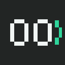
Cortico
Cortico is an open-source agent project that helps builders handle event-stream AI Agent framework for building your persona bot.
Added
VelaTerm
VelaTerm is an open-source agent project that helps builders handle = Codex + iTerm2, The Best ADE for AI Coding.
Added
Dsh Trading
Dsh Trading is an open-source agent project that helps builders handle agent-native trading terminal built on DeepSeek Harness.
Added
Blave Agent
Blave Agent is an open-source agent project that helps builders handle quant infrastructure for AI agents — a free, open-source desktop workspace.
Added
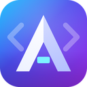
CodeAlta
CodeAlta is an open-source agent project that helps builders handle agentic Development Environment.
Added
NeuralDeskApp
NeuralDeskApp is an open-source agent project that helps builders handle versatile Almost Local, Eventually Reasonable Assistant.
Added
Datastoria
Datastoria is an open-source agent project that helps builders handle AI-native ClickHouse console for your cluster diagnostics and query generation, optimization.
Added
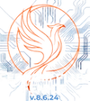
Claude Code Android
Claude Code Android is an open-source agent project builders use to run Claude Code natively on Android via Termux or AVF (Android Virtualization.
Added
Lyrie Ai
Lyrie Ai is an open-source agent project that helps builders handle lyrie.ai — The world's first autonomous AI cybersecurity agent.
Added
Golembot
Golembot is an open-source agent project that helps builders handle any Agent × Any Provider × Anywhere.
Added
Loomic
Loomic is an open-source agent project that helps builders handle AI canvas design agent — alternative to Lovart / CapCut Video Studio.
Added
Spring Ai Loom Agent
Spring Ai Loom Agent is an open-source agent project that helps builders handle spring Boot AI Agent — an out-of-the-box solution that makes your app.
Added
Deep Student
Deep Student is an open-source agent project builders use to open-source, local-first AI learning workbench.
Added
Gugu
Gugu is an open-source agent project that helps builders handle connects your agents and your people: sharing context, handing off work, thinking.
Added
Bloks
Bloks is an open-source agent project that helps builders handle local-first desktop app for running a team of AI agents on Claude.
Added
Meetcap
Meetcap is an open-source agent project that helps builders handle powerful, free, context-aware AI native meeting assistant that transcribes in real-time.
Added
Chmonitor
Chmonitor is an open-source agent project that helps builders handle operational advisor for ClickHouse — real-time monitoring plus AI-driven index/partition/materialized-view recommendations.
Added
Open Vetta
Open Vetta is an open-source agent project builders use to open-source, local-first AI agent for coding and real work.
Added
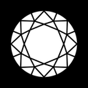
Open Net Worth
Open Net Worth is an open-source agent project that helps builders handle alternative to Claude and ChatGPT Personal Finance.
Added
Endoplexity
Endoplexity is an open-source agent project that helps builders handle agentic browser control driven by your own Claude / Cursor subscriptions.
Added
OpenGhost
OpenGhost is an open-source agent project builders use to open desktop AI agent for Windows, macOS and Linux, written from scratch.
Added
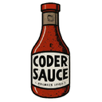
Red
Red is an open-source agent project that helps builders handle memo: Vimlike Modal Text Editor in Rust.
Added
Sico
Sico is an open-source agent project that helps builders handle digital Worker platform for reliable execution, continuous co-evolution, and building Enterprise AI.
Added
Mue X
Mue X is an open-source agent project that helps builders handle first self-evolving AI agent.
Added
Pilot Harness
Pilot Harness is an open-source agent project that helps builders handle — a CodePilot-inspired desktop client and plugin suite for DeepSeek Harness.
Added
Govctl
Govctl is an open-source agent project that helps builders handle governance harness for AI coding.
Added
Kyllene
Kyllene is an open-source agent project that helps builders handle unofficial Android client for Hermes Agent.
Added
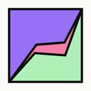
Whatsapp Ai Agent Sdk
Whatsapp Ai Agent Sdk is an open-source agent project that helps builders handle AI agent SDK for WhatsApp.
Added
GoGogot
GoGogot is an open-source agent project that helps builders handle AI agent.
Added
Agent Launcher
Agent Launcher is an open-source agent project that helps builders handle configure and run existing coding-agent CLIs from one desktop app.
Added
Bitget Wallet Skill
Bitget Wallet Skill is an open-source agent project that helps builders handle AI agent skill for Bitget Wallet — token swap, cross-chain bridge.
Added
Nodecode
Nodecode is an open-source agent project that helps builders handle living agent organism in Lisp.
Added
Noobi.ai
Noobi.ai is an open-source agent project that helps builders handle local-first desktop agent that turns a prompt into a reviewed, playable browser.
Added
Texel Studio
Texel Studio is an open-source agent project that helps builders handle AI pixel art agent that paints like a real artist.
Added
ContribAI
ContribAI is an open-source agent project that helps builders handle maintainer-governed agent for evidence-backed open-source contribution proposals.
Added
Bitrouter
Bitrouter is an open-source agent project that helps builders handle elastic inference for your agentic workloads, on your terms.
Added
Pi Rust
Pi Rust is an open-source agent project that helps builders handle rust-native, library-first coding-agent runtime and terminal CLI inspired by Pi, with composable.
Added
PiX
PiX is an open-source agent project that helps builders handle non-linear AI agent workbench — session is a tree: branch anytime.
Added
Ansvisor
Ansvisor is an open-source agent project that helps builders handle agentic AI Search Execution Platform.
Added
Skilless.Ai
Skilless.Ai is an open-source agent project that helps builders handle gives your AI Agents real data capabilities - web search, web scraping.
Added
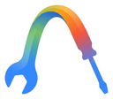
BetterGravity
BetterGravity is an open-source agent project that helps builders handle extensible power-user platform for Google Antigravity.
Added
Saas Builder
Saas Builder is an open-source agent project that helps builders handle AI-native SaaS framework that builds full-stack apps using autonomous AI agents.
Added
Pawwork
Pawwork is an open-source agent project that helps builders handle — free, open-source desktop AI agent for macOS and Windows, built.
Added
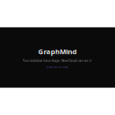
Graphmind
Graphmind is an open-source agent project that helps builders handle local-first code intelligence for AI assistants.
Added
Emperor Agent
Emperor Agent is an open-source agent project that helps builders handle local Emperor-style AI agent with Vue WebUI, multi-provider LLMs, streaming chat, tools.
Added
Kasetto
Kasetto is an open-source agent project that helps builders handle declarative AI agent environment manager, written in Rust.
Added
Ai Agents Tutorial
Ai Agents Tutorial is an open-source agent project that helps builders handle learn AI Agents step by step, from scratch - from function calling.
Added
Mkagent
Mkagent is an open-source agent project that helps builders handle local-first, Pi-powered AI agent workspace for Desktop, WebUI, and CLI.
Added
Opsy
Opsy is an open-source agent project that helps builders handle your AI-Powered SRE Colleague.
Added
Wirken
Wirken is an open-source agent project that helps builders handle enterprise gateway for autonomous agents.
Added
Distribb Skill
Distribb Skill is an open-source agent project that helps builders handle distribb CLI, Claude, Codex, Hermes, OpenClaw skill for AI-powered SEO.
Added
Coddy Agent
Coddy Agent is an open-source agent project that helps builders handle general-purpose agent in one static Go binary: console TUI, ACP server.
Added
Cutcli Cookbook
Cutcli Cookbook is an open-source agent project that helps builders handle cookbook, JSON templates, AI prompts and docs for cutcli — the CapCut.
Added
Dim0
Dim0 is an open-source agent project builders use to open-source, real-time collaborative AI canvas - notes, mini-apps, and agents on one.
Added
WeWorker
WeWorker is an open-source agent project that helps builders handle desktop AI agent that takes real actions on websites — 33 adapters.
Added
Agentic Awesome Skills
Agentic Awesome Skills, formerly Antigravity Awesome Skills, is a library of more than 2,900 installable SKILL.md playbooks for Claude Code, Codex, Cursor, Gemini CLI and other coding agents, with AAS Core, a tool that lets Codex or Claude search the full local catalog, record the skills it picks and preview a plan before changing your project; the code is MIT and imported skills keep their own licences.
Added
Guardrails
Guardrails is an open-source agent project that helps builders handle neMo is an open-source toolkit for easily adding programmable to LLM-based conversational.
Added
Agentseal
Agentseal is an open-source agent project that helps builders handle security toolkit for AI agents.
Added
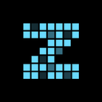
Zot
Zot is an open-source agent project that helps builders handle yet another coding agent harness, lightweight and written in go.
Added
VeritasChain Protocol
VeritasChain Protocol comes from the VeritasChain Standards Organization, which publishes VAP, an open framework for tamper-evident "flight recorder" logs of AI decisions and actions, and VCP, its version for algorithmic trading; the site has the specifications, an SDK, sample evidence and a browser demo for verifying a record.
Added
Cybermes
Cybermes is an open-source agent project that helps builders handle autonomous Offensive Security, Bug Bounty & Red Teaming Agent Framework powered.
Added
Gg Framework
Gg Framework is an open-source agent project that helps builders handle coding agent that gets more out of your AI subscription.
Added
UI UX Pro Max
UI UX Pro Max is an open-source agent skill that gives coding agents design intelligence for web and mobile UI, with a design-system generator that reasons over your product type and outputs matching styles, colour palettes, font pairings, layout patterns and UX rules for many frameworks.
Added
Rezloom
Rezloom tailors your resume to a specific job description by pulling evidence from your own career library, keeping every claim traceable to real experience, producing matching English and Chinese versions, and sharing through public, private or expiring links you can revoke.
Added
Agentic Bug Hunter
Agentic Bug Hunter is an open-source AI bug-bounty toolkit that pairs with Claude and other agents to hunt vulnerabilities across targets.
Added
Lumibot
Lumibot is a Python trading framework with AI agents that can place and manage trades across brokers with backtesting support.
Added
Commonly
Commonly is one shared pod for your team and the agents each person runs, with harness and protocol support for agentic work.
Added
Chorus
Chorus is an agent harness for AI-human collaboration inspired by AI-DLC, with kanban-style control for Claude Code sessions.
Added
A2UI
A2UI is an open-source agent-to-UI protocol and toolkit for rendering interactive agent interfaces so products can show structured agent output beyond plain chat bubbles.
Added
AiToEarn
AiToEarn is an open-source creator toolkit that uses AI agents and skills to publish and monetize content across major social platforms.
Added
Open SEO
Open SEO is an open-source SEO toolkit for AI agents that audits sites, tracks opportunities and helps agents ship search improvements without a closed SaaS lock-in.
Added
DeepSeek Harness
DeepSeek's open-source agent harness with a local web UI, built so that every tool, model and scheduled task is a swappable plugin; still a developer preview.
Added
Worldmonitor
Real-time global intelligence dashboard. AI-powered news aggregation, geopolitical monitoring, and infrastructure tracking in a unified situational awareness interface
Added
Diagram Design
Editorial diagram design for Claude Code, Codex, GitHub Copilot, Cursor, Factory Droid, and Pi. 44 diagram types.
Added
Dsh Our Free Model
dsh ， 、 API Key， DeepSeek V4.1 Flash、Kimi K3 —— ， 。 All you do is install this plugin in dsh: no login, no sign-up, no API key — the frontier models are just there, DeepSeek V4.1 Flash and Kimi K3.
Added
Siyuan
An open-source, privacy-first, self-hosted knowledge workspace where humans and AI agents work together 、 、 ，
Added
OpenHuman
Lightweight open-source agent harness designed to run many agents cheaply on small servers.
Added
CopilotKit
Frontend stack for putting agents and generative UI into React and other apps, from the makers of the AG-UI protocol.
Added
OfficeCLI
OfficeCLI is the first and best Office suite purpose-built for AI agents to read, edit, and automate Word, Excel, and PowerPoint files. Free, open-source, single binary, no Office installation required
Added
9router
Unlimited FREE AI coding. Connect Claude Code, Codex, Cursor, Cline, Copilot, Antigravity to FREE Claude/GPT/Gemini via 40+ providers.
Added
smolagents
Hugging Face's minimal library for code-writing agents.
Added
Vercel AI SDK
TypeScript toolkit for building AI apps and agents.
Added
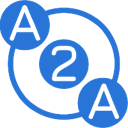
A2A
Agent2Agent, an open protocol for agents built on different frameworks to communicate and work together.
Added
BabyAGI
Yohei Nakajima's experimental self-building agent framework that creates, stores and runs its own functions.
Added
Google ADK
Google's Agent Development Kit for building and deploying agents.
Added
Guidance
Programming paradigm for steering language models that constrains output with regex and grammars and interleaves control flow with generation.
Added
Excelize
Go language library for reading and writing Microsoft Excel™ (XLAM / XLSM / XLSX / XLTM / XLTX) spreadsheets
Added
Pydantic AI
Type-safe Python agent framework from the Pydantic team.
Added
Toonflow App
、 Toonflow： AI ， 、 、 、 。 、AI Agent ， 、 、 、MCP 。Open-source AI short drama and motion comic creation tool with an infinite canvas, AI agents, storyboarding, image and video generation. Self-hosted and.
Added
Agent Zero
Open-source agentic framework and computer assistant whose agents use their own OS environment, create tools and self-correct.
Added
Iii
Effortlessly compose, extend, and observe every service in real-time for the first time ever
Added
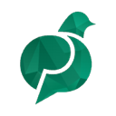
Parlant
Framework for building reliable customer-facing agents with explicit behavior guidelines.
Added
OpenFang
Open-source agent operating system for running autonomous agents.
Added
AG-UI
Agent-User Interaction protocol for streaming agent state and events into frontend apps.
Added
Dagger
Automation engine to build, test and ship any codebase. Runs locally, in CI, or directly in the cloud
Added
Outlines
Library from .txt for structured generation that guarantees LLM output matches a JSON schema, regex or grammar.
Added
Video Shotcraft
AI video skill for Claude Code & Codex — cinematic product videos with Remotion: 152 shot recipe cards, 209 motion previews, a production-ready template
Added
OpenUI
Framework-agnostic generative UI framework with a compact streaming language and runtimes for React, Vue, Svelte and Angular.
Added
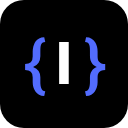
Instructor
Library for getting validated structured outputs from any LLM, built on Pydantic with retries and type safety.
Added
assistant-ui
Open-source React components and runtimes for building AI chat and agent front ends with streaming, tools and persistence.
Added
Tambo
Generative UI SDK for React that lets agents render components.
Added
Spring AI Alibaba
Agentic AI framework for Java developers built on Spring AI.
Added
VoltAgent
TypeScript agent framework plus an engineering platform for building, observing and deploying AI agents.
Added
BAML
Typed programming language for agents and LLM functions, with runtime types, typed errors and structured outputs designed to reduce agent mistakes.
Added
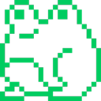
Strands Agents
Strands open-source SDK for building production agent harnesses in Python and TypeScript.
Added
Evolver
Self-evolving engine for AI agents with auditable genes, capsules and events.
Added
TypeChat
Microsoft library for building natural-language interfaces by using types to constrain and validate LLM responses.
Added
Claude Agent SDK (Python)
Anthropic's Python SDK for building agents on Claude Code's agent loop, with the CLI bundled, custom tools and hooks.
Added
Upsonic
Python framework for building autonomous AI agents.
Added
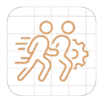
Agent Squad
Framework for routing conversations across multiple specialized AI agents.
Added
OpenEvolve
Open-source take on AlphaEvolve that uses LLM agents to evolve better code and algorithms.
Added
Agent-Native (Builder.io)
Open-source TypeScript framework for building agents that come with their own app UI; each action is shared by the UI, agent, API, CLI, MCP and A2A.
Added
Genkit
Google's open-source framework for building agentic apps in JavaScript, Go, Dart and Python.
Added
IntentKit
Self-hosted cloud cluster for running a team of collaborating AI agents.
Added
TrueForge
Open-source agent harness runtime that turns an LLM into a working agent.
Added
AgentScope Java
Java version of AgentScope for building distributed, long-running agents.
Added
Cloudflare Agents
Cloudflare's SDK for building and deploying stateful AI agents on Workers.
Added
Open Agents
Vercel's open-source template for building cloud agents.
Added
ZenML
MLOps and agent platform for building pipelines and deploying agents.
Added
FrontierAgent
Open-source agent runtime and terminal app for long-horizon research and file work, with single-agent ReAct and parallel agent-team modes.
Added
Koog
JetBrains' Kotlin framework for building predictable, enterprise-ready AI agents on the JVM.
Added
Docker Agent
Docker's agent builder and runtime for defining and running agents.
Added
Agent Service Toolkit
Toolkit for running an agent service with LangGraph, FastAPI and Streamlit.
Added
Embabel
Agent framework for the JVM from the creator of Spring.
Added
RubyLLM
Ruby framework for working with LLMs, including chat, tools and agents, through one API.
Added
MS-Agent
ModelScope's modular agent framework for complex, long-running tasks that combines models, tools, skills and sub-agents in a customizable harness.
Added
Open Intelligent UI
CopilotKit's open-source generative UI chat interface that turns questions into interactive explanations, comparisons and working tools. It is built on CopilotKit and AG-UI.
Added
Antigravity SDK
Google's Python SDK for building stateful AI agents powered by Antigravity and Gemini, abstracting the agent loop and runtime.
Added
Atmosphere
Real-time AI agent runtime for the JVM that runs one agent class on Spring AI, LangChain4j and other backends with streaming, MCP, A2A and AG-UI.
Added
II-Agent
Open-source AI agent for real work from Intelligent Internet that you can run, fork and extend with your own API keys.
Added
TanStack AI
Type-safe, provider-agnostic TypeScript SDK for chat, tool calling and agents.
Added
OpenGAP
Framework-agnostic, git-native standard and CLI for defining AI agents so a repository becomes a runnable agent.
Added
Ax
DSPy-style framework for building LLM programs and agents in TypeScript.
Added
AgentField
Build, run and scale AI agents like APIs and microservices.
Added
Agentic Context Engine
Engine that lets agents learn from their own experience.
Added
Lagent
Lightweight PyTorch-inspired framework from InternLM for building LLM-based agents.
Added
AgentFlow
Stanford's trainable agentic system where planner, executor, verifier and generator modules coordinate, with a Hugging Face demo.
Added
Adala
HumanSignal's autonomous data-labeling agent framework, where agents learn labeling skills iteratively.
Added
AMD GAIA
AMD's open-source toolkit for building AI agents that run locally on Ryzen AI PCs, keeping data on the device.
Added
Mirascope
Lightweight Python library for calling any LLM with typed outputs and tools through one interface, without a heavy framework.
Added
Golem
Agent-native platform for building durable agents and distributed apps that keep state and never duplicate work after a failure.
Added
thClaws
An open-source AI agent workspace in native Rust that runs locally as a GUI, CLI, headless service or web app from a single binary, with multiple model providers.
Added
IBM CUGA
IBM Research's configurable generalist agent (CUGA) for enterprise web and API tasks, with a live demo on Hugging Face Spaces.
Added
Rome OS
Rome is an open-source agent OS for recursive agents that compounds what they learn. Agents build their own tools, keep context and reuse capabilities across tasks instead of starting fresh each time, so a long-running assistant grows more capable the more it works.
Added
Aeon
Aeon is an open-source autonomous agent framework that runs unattended on GitHub Actions, using a library of self-healing skills to pursue a goal without approval loops.
Added
nanocode
nanocode is a small SDK for embedding frontier-model agents inside your own apps and tools. It provides the agent loop, tool calling and session handling for models such as Claude and GPT in a compact codebase, so developers can ship a capable embedded agent without adopting a heavy framework.
Added
Lyzr
Enterprise agent studio and framework for building secure AI agents.
Added
Orca Agent Engine
Open Apache-2.0 runtime to build, run, and govern managed agents with choice of harness (Claude Agent SDK, Codex, Pi) and model; open-sourced Oct 6, 2026 (Developer Preview).
Added
Restack
Platform for designing, testing and running reliable agents at enterprise scale on Kubernetes.
Added
Pi
Minimal, extensible open-source terminal coding agent and agent toolkit from Earendil, with a multi-provider LLM API, TypeScript SDK, RPC mode and installable extensions, skills and themes.
Added
Paperclip
Self-hosted app for running a team of AI agents like a small company, with org charts, goals, budgets and approval gates across Claude Code, Codex, OpenClaw and other harnesses.
Added
Open Interpreter
Terminal coding agent forked from OpenAI's Codex and tuned for low-cost and open-weight models, with switchable harness modes that imitate tools like Claude Code.
Added
CowAgent
Open-source personal assistant and agent harness that plans tasks, runs tools and skills and connects to chat apps.
Added
Stagehand
Browser automation framework mixing code with natural-language actions.
Added
MCP Python SDK
Official Python SDK for building Model Context Protocol servers and clients.
Added
jcode
High-performance coding agent harness written in Rust.
Added
opencodex
A local provider proxy that lets OpenAI Codex (CLI, app and SDK) and Claude Code run on other model providers such as Claude, Gemini, Grok, DeepSeek or local Ollama models.
Added
Midscene.js
Vision-driven UI automation and E2E testing framework where a GUI agent carries out natural-language steps on web, mobile and desktop apps.
Added
Botpress
Platform for building and deploying LLM-powered chatbots and agents, with a visual studio, integrations hub, CLI and SDK.
Added
Agent-S
Open agentic framework that uses computers like a human through the GUI.
Added
RobotGo
Go library for cross-platform desktop automation and AI computer use that controls mouse, keyboard, screen, windows and processes.
Added
Mobilerun
LLM-agnostic agent framework for controlling Android and iOS devices with natural language.
Added
Munder Difflin
Free, open-source harness that runs Claude Code, Codex, Gemini CLI and other terminal agents together like an office.
Added
Guardrails AI
Open-source framework for validating LLM inputs and outputs with configurable guardrails.
Added
Failproof AI
Observability and policy enforcement for AI agent harnesses.
Added
Agent Governance Toolkit
Microsoft toolkit for policy enforcement, identity and sandboxing for AI agents.
Added
Open Connector
Open-source auth gateway connecting SaaS apps to AI agents via SDK, CLI and MCP.
Added
VibeSDK
Cloudflare's open-source kit for running your own vibe-coding platform.
Added
Sphere SDK
TypeScript SDK that gives autonomous agents an identity and wallet on the Unicity network to find, negotiate and settle payments with other agents.
Added
MCP Go SDK
Official Go SDK for building Model Context Protocol servers and clients, maintained with Google.
Added
PPTAgent
Agentic framework that generates and refines PowerPoint presentations.
Added
Adhd
ADHD — a skill for coding agents. Tree-of-thought with pruning, built on the Claude & Codex Agent SDK.
Added
Hyperresearch
Deep research harness that turns Claude Code or Codex into a research agent building a persistent, searchable wiki, with a hosted API and MCP.
Added
LearnHarness
Desktop agent harness for learning hard subjects: the tutor probes where your understanding ends, follows your written reasoning, then plans explanations and prediction-style practice around your gaps. Free for.
Added
kagent
Cloud-native framework for running AI agents on Kubernetes.
Added
MCP Rust SDK
Official Rust SDK for the Model Context Protocol.
Added
HarnessRouter
One API for running coding-agent harnesses such as Codex, Claude Code and Hermes as product backends, with sessions, streaming, files and failure handling.
Added
OneCLI
Sandboxed agent harness for teams with secure credential handling.
Added
LLM for Zotero
Zotero plugin that adds a research agent to your library so you can ask questions about papers, compare sources and save notes without leaving the reader.
Added
Agent Desktop
Vercel Labs' open-source computer-use layer that lets AI agents read and operate desktop apps on macOS, Windows and Linux through the OS accessibility tree instead of guessing from screenshots. A snapshot returns JSON with a stable ref for every clickable element; the agent acts on a ref and snapshots again to verify, which keeps actions safe to retry, saves tokens by scoping to one app region and lets several agents work in parallel. Rust CLI plus C library, installed with npm install -g agent-desktop. Apache-2.0.
Added
Redamon
Open-source, self-hosted AI penetration testing framework: maps your attack surface into a graph, autonomously exploits it from a Kali sandbox with human approval gates, and opens PRs that fix what.
Added
PentestAgent
Agent framework for black-box security testing and bug bounty work.
Added
MiroFlow
Research agent framework with web UI supporting MiroThinker and other models.
Added
Teaql Agent Kit
A model-driven harness for AI coding agents: semantic modeling, app generation, progressive API Assist and evidence-based verification
Added
Autodistill
Roboflow's open-source library that uses large foundation models to auto-label images and then trains small, deployable detection or classification models with no manual labeling.
Added
Mantis
Google's toolkit for AI coding agents to autonomously find, reproduce and patch software vulnerabilities in isolated environments.
Added
Better Harness
An open-source Harness Engineering platform for coding agents—define harnesses as code, run controlled experiments, inspect evidence, and compare outcomes. Turn task evidence into actionable team and.
Added
LCU
Brings the computer-use runtime from the ChatGPT desktop app to Claude Code, Codex CLI and Pi, so any agent harness can see and control your desktop without a Codex sign-in.
Added
Skybridge
Full-stack TypeScript and React framework for building MCP Apps and ChatGPT Apps.
Added
Notte
Browser infrastructure for AI agents: stealth cloud browsers with CAPTCHA solving and proxies, a Playwright-based framework and serverless automations.
Added
Agmsg
Cross-vendor messaging for CLI AI coding agents — let Claude Code, Codex, Gemini & Copilot talk to each other in one team. Bash + SQLite, no daemon, no framework
Added
Sceneview
3D & AR SDK for Android (Jetpack Compose + Filament), Apple (SwiftUI + RealityKit), Web, Flutter and React Native. Opens glTF/GLB, 3MF, STL, OBJ and PLY on Android and USDZ on Apple, at real size in AR.
Added
Coinbase AgentKit
Coinbase's toolkit that gives any AI agent a crypto wallet and on-chain actions.
Added
QA Agent
QA Agent is an open-source Playwright library for AI browser regression testing. An agent writes, runs, or maintains tests and reports what broke.
Added
Browserable
Open-source JavaScript browser automation library for AI agents.
Added
Nekro Agent
NekroAgent ， Claude Code 、 、 、 MCP ， 、 、 。 QQ、Discord、Telegram、Minecraft、BilibiliLive、WeChat、Email、SSE(SDK) ， ， 、 、 Agent
Added
Cloudflare Sandbox SDK
SDK for running isolated code sandboxes on Cloudflare's network, so agents can execute commands and files safely from a Worker.
Added
Judgeval
Open-source SDK for tracing agents and scoring them with agent judges, so failures in production can be found and fixes checked.
Added
Caspian
An open-source communication SDK that lets AI agents send and receive messages over email, WhatsApp, Slack, Discord and other channels.
Added
Manuscript Core
Manuscript is a revolutionary blockchain data streaming framework. With Manuscript, you can seamlessly integrate on-chain and off-chain data into target data storage for unrestricted querying and analysis
Added
Telekinesis Agentic Skill Library
Python library of 250+ perception, vision and robotics skills plus a Physical AI agent that turns natural-language prompts into reviewable robot code.
Added
SODAX SDK
Cross-network DeFi execution SDK (swaps, lending, bridging) with skills and a Builders MCP for AI-assisted development.
Added
System One API
System One API is the hosted decision API behind TypeSafe Jev, with an open-source TypeScript SDK for AI agents. Where the TypeSafe Jev listing covers the decision model itself, this listing covers the developer API and console: send text or app context and get back a typed choice, a score or a yes/no probability for routing tools, ranking results and checking conditions, with API keys, call logs and credit use managed in one place.
Added
EyePop.ai
SDK-first vision platform where you define what to detect and it builds detection, tracking, OCR and VLM pipelines, with a Video Agent and agent skills, deployable to cloud, edge or on-prem.
Added
wren-guard Pro
wren-guard Pro is a TypeScript guard library for AI agents that hold or move funds on Base and other EVM chains (viem, CDP AgentKit, Privy, Eliza and similar stacks). It enforces allowlisted, capped and simulated sends, decodes calldata and signatures to flag unlimited approvals, Permit, Permit2, setApprovalForAll and EIP-7702 delegation, screens for injected instructions and watches nonces. It ships with an 89-scenario attack corpus drawn from public agent wallet incidents and a GitHub Action that fails CI if your agent's policy would let a known attack through. The original Python wren-guard is free and MIT licensed.
Added
OpenSumi
Framework for building AI-native IDE products, with an MCP client and agent features.
Added
VideoDB Director
Open-source framework of 20+ video agents that search, summarize, clip, edit and stream video from natural-language commands, built on VideoDB.
Added
AgentBay
Alibaba Cloud's cloud sandbox service for agents, offering ready-made browser, Linux and Windows desktop, mobile and code environments that agents control through an SDK or MCP.
Added
OpenGCUA
Open stack from Tongyi Lab's MAI-UI team for generalist computer-use agents that combine GUI clicks, accessibility trees, terminal commands, APIs and code: an OSWorld harness, a macOS real-device harness, a cross-device SDK and published task runs of eight frontier models.
Added
GitHub repos (619)
| Repo | GitHub stars | Licence | Last push |
|---|---|---|---|
| 393,429 | MIT | 2026-10-30 | |
| 293,059 | MIT | 2026-10-30 | |
| 266,458 | MIT | 2026-10-29 | |
| 258,708 | MIT | 2026-10-30 | |
| 187,826 | MIT outside the autogpt_platform folder; the platform is under the Polyform Shield | 2026-10-28 | |
| 147,219 | MIT | — | |
| 118,955 | MIT | 2026-10-30 | |
| 108,842 | MIT | 2026-10-30 | |
| 91,693 | MIT, moving to Apache-2.0 for new contributions | 2026-10-28 | |
| 90,396 | BSD 3-Clause | 2026-10-29 | |
| 89,781 | AGPL-3.0 | 2026-10-30 | |
| 84,715 | MIT | 2026-10-30 | |
| 80,231 | MIT | 2026-10-30 | |
| 80,149 | — | — | |
| 78,329 | Apache License 2.0 | 2026-10-30 |
Top 15 of 619 by stars. Stars and licence come from each repo, checked when the listing was last verified.
Related tasks
Popular with
Related searches
- Open-source AI agent frameworks
- Python AI agent frameworks
- TypeScript and JavaScript AI agent frameworks
Tools are matched to tasks by category, use cases and what each tool says it does. Missing one? Submit it free.